<!doctype html>
<html lang="en">
<head>
  <meta charset="utf-8">
  <meta name="viewport" content="width=device-width, initial-scale=1">
  <title>arxiv digest — 2026-08-27</title>
  <style>
:root {
  --bg: #ffffff;
  --fg: #1f2328;
  --muted: #59636e;
  --border: #d0d7de;
  --card: #f6f8fa;
  --link: #0969da;
}
body {
  max-width: 980px;
  margin: 0 auto;
  padding: 2rem 1rem 5rem;
  font-family: -apple-system, BlinkMacSystemFont, "Segoe UI", Helvetica, Arial, sans-serif;
  line-height: 1.55;
  color: var(--fg);
  background: var(--bg);
}
a { color: var(--link); }
img { max-width: 100%; height: auto; }
pre, code { background: var(--card); border-radius: 6px; }
pre { padding: 1rem; overflow-x: auto; }
blockquote { border-left: 4px solid var(--border); padding-left: 1rem; color: var(--muted); }
details { margin: 0.6rem 0; }
summary { cursor: pointer; font-weight: 600; }
.paper-figures-scroll {
  display: flex;
  gap: 1rem;
  overflow-x: auto;
  overscroll-behavior-x: contain;
  padding: 0.75rem 0.25rem 1rem;
  margin: 1rem 0 1.25rem;
  border-top: 1px solid var(--border);
  border-bottom: 1px solid var(--border);
  scroll-snap-type: x proximity;
}
.paper-figure-card {
  flex: 0 0 min(260px, 72vw);
  scroll-snap-align: start;
  background: var(--card);
  border: 1px solid var(--border);
  border-radius: 12px;
  padding: 0.55rem;
}
.paper-figure-card img {
  display: block;
  width: 100%;
  max-height: 240px;
  object-fit: contain;
  background: white;
  border-radius: 8px;
}
.paper-figure-caption {
  display: block;
  margin-top: 0.5rem;
  color: var(--muted);
  font-size: 0.85rem;
}
.figure-strip-hint {
  color: var(--muted);
  font-size: 0.9rem;
  margin-bottom: -0.3rem;
}
</style>
  <!-- MathJax: renders $...$ inline math and $$...$$ display math, plus
       \(...\) and \[...\]. Loaded from the official CDN; works offline
       once cached. Configured to skip code/pre blocks so arxiv IDs that
       look like dollar amounts don't get mangled. -->
  <script>
    window.MathJax = {
      tex: {
        inlineMath: [['$', '$'], ['\\(', '\\)']],
        displayMath: [['$$', '$$'], ['\\[', '\\]']],
        processEscapes: true,
        processEnvironments: true
      },
      options: {
        skipHtmlTags: ['script', 'noscript', 'style', 'textarea', 'pre', 'code'],
        ignoreHtmlClass: 'tex2jax_ignore',
        processHtmlClass: 'tex2jax_process'
      }
    };
  </script>
  <script id="MathJax-script" async
    src="https://cdn.jsdelivr.net/npm/mathjax@3/es5/tex-chtml.js"></script>
</head>
<body>
<header style="background-color: #333; color: white; padding: 15px; margin-bottom: 20px;">
  <h1 style="margin: 0; font-size: 24px;">
    <a href="https://ochelpan.github.io/arXiv_clean/" style="color: white; text-decoration: none;">Main</a>
  </h1>
</header>

<h1>Daily arXiv Report</h1>

<hr>
<p>
<a href="index.html">← Index</a>
 · <a href="papers_02.html">Next →</a>
</p>
<hr>

<h2>Papers 1–20</h2>
<p><a id="paper-2608.24451"></a></p>
<h3 id="tunable-size-unruh-dewitt-detector-in-a-multimode-cavity">⭐ <a href="http://arxiv.org/abs/2608.24451v1">Tunable-Size Unruh-DeWitt Detector in a Multimode Cavity</a></h3>
<p><strong>Highlighted author(s):</strong> Helmut Ritsch<br>
<strong>Authors:</strong> Simon Brunner, Farokh Mivehvar, Helmut Ritsch, Arkadiusz Kosior<br>
<strong>Type:</strong> theory · <strong>Category:</strong> other · <strong>PDF:</strong> <a href="https://arxiv.org/pdf/2608.24451v1">https://arxiv.org/pdf/2608.24451v1</a><br>
<strong>Analysis basis:</strong> full PDF text, analyzed in chunks
<strong>Topic relevance:</strong> 🔥 <code>analog quantum simulation</code> <strong>4/5</strong> · <code>Tavis-Cummings &amp; cavity-many-emitter</code> <strong>2/5</strong> · <code>quantum measurements</code> <strong>2/5</strong> · <code>Keldysh / 2PI / non-Gaussian methods</code> <strong>1/5</strong> · <code>correlated / nonlocal dissipation</code> <strong>1/5</strong> · <code>methods for driven-dissipative</code> <strong>1/5</strong></p>
<div class="figure-strip-hint">↔ Scroll figures horizontally</div>
<div class="paper-figures-scroll">
<figure class="paper-figure-card">
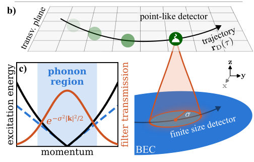
<figcaption class="paper-figure-caption"><b>Fig 1.</b> FIG. 1. a) Setup. A 1D/2D BEC confined in the transverse plane of a longitudinally pumped (η) near-planar optical cav- ity. A two-level atom (green circle), held by an optical tweezer outside the BEC, serves as an Unruh–DeWitt detector. Con- densate and atom couple to many nearly degenerate cavity modes, which mediate an effective, finite-range interaction be- tween them. b) Effective model. The detector is steered along an accelerated trajectory in the transverse plane. Because the cavity-mediated coupling has a finite transverse range, the physically pointlike atom couples to an extended region of the condensate (orange cone), acquiring an effective detector size σ (projected ellipse on...</figcaption>
</figure>
<figure class="paper-figure-card">
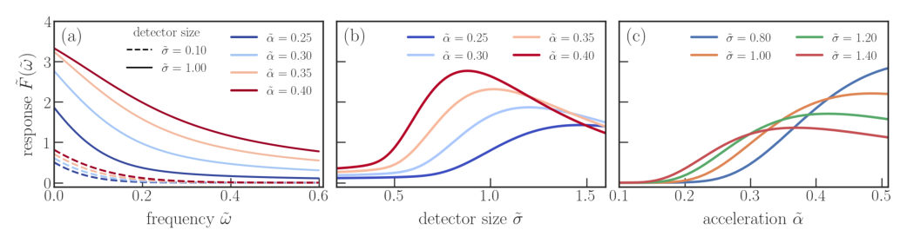
<figcaption class="paper-figure-caption"><b>Fig 2.</b> FIG. 2. Detector response ˜F(˜ω) as a function of frequency, detector size, and acceleration. (a) Response versus dimensionless frequency ˜ω for small (˜σ = 0.10, dashed lines) and large (˜σ = 1.00, solid lines) detector sizes across various accelerations ˜α. For ˜σ = 0.10, the numerical results are indistinguishable from the analytical pointlike Unruh response formula. (b) Response as a function of detector size ˜σ for a fixed frequency ˜ω = 0.1, showcasing a distinct resonance-like amplification peak that shifts with acceleration. (c) Response versus acceleration ˜α at a fixed frequency ˜ω = 0.1 for several large detector sizes, illustrating how finite-size effects optimize the signal at...</figcaption>
</figure>
<figure class="paper-figure-card">
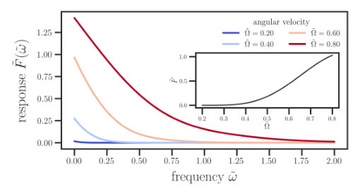
<figcaption class="paper-figure-caption"><b>Fig 3.</b> FIG. 3. Nonthermal detector response ˜F(˜ω) for circular mo- tion in (2 + 1) dimensions. The main panel shows the dimen- sionless response as a function of detector frequency for fixed detector size ˜σ = 1 and orbital radius ˜R = 1, with the four curves corresponding to ˜Ω= 0.20, 0.40, 0.60, and 0.80 (from blue to red). The response increases with angular velocity and decreases with detector frequency. Unlike uniform linear acceleration, circular motion does not yield an exactly ther- mal spectrum. Inset: Response at fixed frequency ˜ω = 0.2 as a function of angular velocity, showing monotonic growth toward the relativistic regime.</figcaption>
</figure>
<figure class="paper-figure-card">
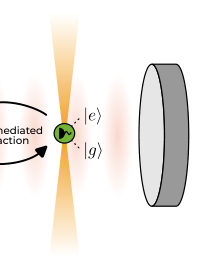
<figcaption class="paper-figure-caption"><b>Fig 4.</b> FIG. 1. Alternative setup with a transversally pumped quasi-1D BEC.</figcaption>
</figure>
</div>

<p><strong>Summary.</strong> This theoretical work proposes using a cavity-mediated interaction to create a tunable, finite-size detector within a Bose-Einstein condensate. This finite size acts as a momentum filter, allowing researchers to overcome theoretical limitations of point-like models when simulating relativistic quantum effects like the Unruh effect. The resulting framework offers a versatile platform for advanced quantum measurements using cold atoms.</p>
<p><strong>Why it may be interesting.</strong> This work is highly relevant to AMO physics as it combines cavity QED techniques with ultracold atomic systems to simulate fundamental quantum field effects like the Unruh effect in a controllable, tunable manner.</p>
<details>
<summary>Detailed structure</summary>
<p><strong>Main problem.</strong> The paper addresses the challenge of modeling relativistic analog particle detectors in Bose-Einstein condensates (BECs) by overcoming the limitations of point-like detector approximations.</p>
<p><strong>Main result.</strong> The use of a cavity-mediated interaction provides an effective, tunable finite detector size ($\sigma$), which allows for momentum filtering that can enhance the signal at experimentally accessible accelerations.</p>
<p><strong>Method.</strong> The authors derive the effective detector response rate by adiabatically eliminating fast cavity and BEC degrees of freedom, leading to a model resembling an Unruh-DeWitt detector coupled to density fluctuations.</p>
<p><strong>Model / system.</strong> The system involves a two-level probe atom (UdW detector) coupled to a BEC confined in a multimode optical cavity. The interaction is mediated by the cavity, effectively giving the detector a finite size $\sigma$.</p>
<p><strong>Key observables.</strong> Detector response rate $F(\omega)$ for uniform linear acceleration and uniform circular motion.</p>
<p><strong>Important parameters / regimes.</strong> Tunable detector size ($\sigma$), momentum cutoff, acceleration ($\alpha$), and the BEC healing length ($\xi$).</p>
<p><strong>Assumptions / limitations.</strong> The analysis relies on the phononic regime where the dispersion linearizes, and it assumes the contact interaction dominates over cavity-induced non-local interactions.</p>
<p><strong>Figures summary.</strong> Figures illustrate the physical setup, the effective model showing finite-range coupling, and the resulting momentum filtering mechanism.</p>
<p><strong>Paper structure.</strong> The paper progresses by first establishing the full Hamiltonian, then using adiabatic elimination to derive the effective detector-BEC coupling, and finally calculating the response rate for different motion profiles (linear and circular).</p>
</details>
<details>
<summary>Abstract</summary>
<p>Quantum simulators based on Bose-Einstein condensates (BECs) provide a powerful platform to study relativistic quantum-field phenomena in the lab and in particular emulate relativistic analog particle detectors. However, such detectors typically couple to excitations beyond the acoustic phonon regime, so that the nonlinear Bogoliubov dispersion introduces corrections that cause the effective relativistic description to break down. We propose to overcome this limitation using an intrinsically momentum-selective Unruh-DeWitt detector model in which a tweezer-trapped atom couples to the condensate through a multimode optical cavity. Although the atom is effectively pointlike, the cavity-mediated interaction kernel causes it to sample density fluctuations over a controllable finite region of the BEC equivalent to a finite-size detector. The effective detector size is tunable via the cavity mode structure determining a controllable momentum cutoff that filters out nonphononic excitations. We analytically calculate the response of such a detector for uniform linear acceleration and uniform circular motion and show that this momentum selectivity can enhance the signal at experimentally accessible accelerations. Compatible with existing cavity-QED platforms our scheme thus provides a versatile setting for analog quantum-field measurements or relativistic quantum-information protocols.</p>
</details>
<p><sub><a href="#top">↑ back to top</a></sub></p>

<p><a id="paper-2608.23696"></a></p>
<h3 id="renormalization-group-flow-matching-for-scalable-local-generative-modeling">⭐ <a href="http://arxiv.org/abs/2608.23696v1">Renormalization Group Flow Matching for Scalable Local Generative Modeling</a></h3>
<p><strong>Highlighted author(s):</strong> Yuto Ashida<br>
<strong>Authors:</strong> Kanta Masuki, Yuto Ashida<br>
<strong>Type:</strong> theory · <strong>Category:</strong> statistical mechanics · <strong>PDF:</strong> <a href="https://arxiv.org/pdf/2608.23696v1">https://arxiv.org/pdf/2608.23696v1</a><br>
<strong>Analysis basis:</strong> full PDF text, analyzed in chunks</p>
<div class="figure-strip-hint">↔ Scroll figures horizontally</div>
<div class="paper-figures-scroll">
<figure class="paper-figure-card">
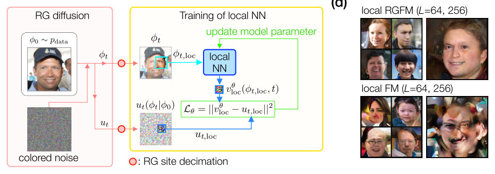
<figcaption class="paper-figure-caption"><b>Fig 1.</b> FIG. 1. (a) Local generative modeling. Exploiting the underlying spatial structure of the data, the velocity field in a target region A (shaded in blue) is approximated using only the configuration ϕloc in its surrounding neighborhood. Data are generated by integrating the ODE flow defined by this locally approximated velocity field, which is learned using a local neural network (NN). (b) Schematic of the probability path used for local generative modeling with renormalization group flow matching (RGFM). The RG wavenumber scale Λ(t) is related to the logarithmic time t by Λ(t) = ΛUVe−t/τ with τ ≪1 being a characteristic time scale specified later. Along the forward path from t = 0 to t = 1,...</figcaption>
</figure>
<figure class="paper-figure-card">
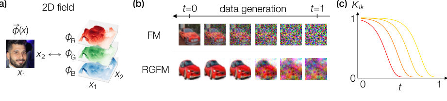
<figcaption class="paper-figure-caption"><b>Fig 2.</b> FIG. 2. (a) Correspondence between image data and an R3-valued vector field ⃗ϕ = (ϕR, ϕG, ϕB) on the two-dimensional pixel lattice, where ⃗ϕ(x) represents the RGB value of the pixel at position x. (b) Data generation in the standard flow matching (FM) and the renormalization group flow matching (RGFM). (c) Behavior of the RG cutoff function Ktk in the Polchinski RG flow (24).</figcaption>
</figure>
<figure class="paper-figure-card">
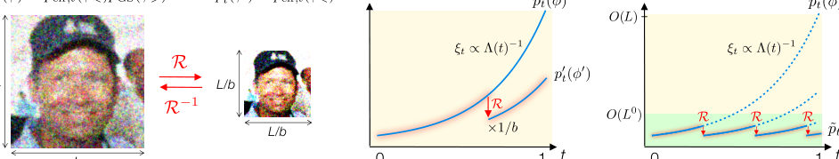
<figcaption class="paper-figure-caption"><b>Fig 3.</b> FIG. 3. (a) Site-decimation transformation R and its probabilistic inverse R−1. The coarse-grained field ϕ′ is obtained by applying the discrete cosine transform (DCT) to ϕ, discarding the high-wavenumber modes ϕ&gt; with |k| &gt; Λ(t), and transforming the retained modes ϕ&lt; back onto the decimated lattice. Conversely, ϕ is reconstructed probabilistically by sampling the missing modes from pGS(ϕ&gt;) and applying the inverse DCT to the combined modes. (b) Score-locality length ξt along the RG diffusion path pt. While ξt grows as cΛ(t)−1, the transformation R, which reduces the linear lattice size from L to L/b, restores the locality length from ξt to ξt/b in lattice units. (c) Successive...</figcaption>
</figure>
<figure class="paper-figure-card">
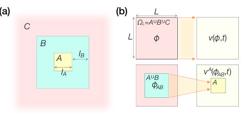
<figcaption class="paper-figure-caption"><b>Fig 4.</b> FIG. 4. (a) Decomposition of the spatial domain ΩL into local regions A and B and the remaining region C = A ∪B. (b) Global and local velocity fields. In general, the velocity field v(ϕ, t) depends on the entire field configuration ϕ. The local velocity field on region A, denoted by vA(ϕAB, t), depends only on the field configuration ϕAB on A ∪B.</figcaption>
</figure>
<figure class="paper-figure-card">
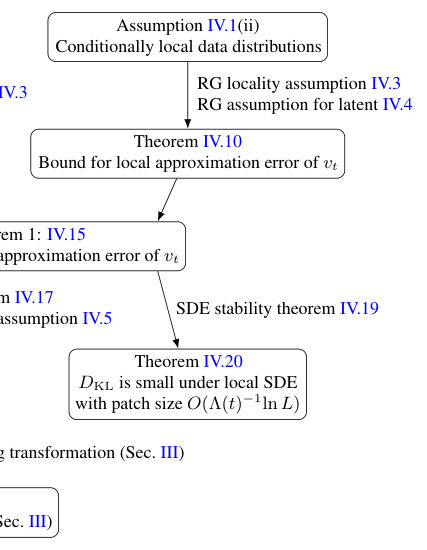
<figcaption class="paper-figure-caption"><b>Fig 5.</b> FIG. 5. Flow chart of the main theorems and their proofs in Sec. IV.</figcaption>
</figure>
</div>

<p><strong>Summary.</strong> This work introduces Renormalization Group Flow Matching (RGFM), a novel generative model that overcomes the scalability limitations of global models and the correlation deficiencies of purely local models. By embedding the systematic scale-connecting mechanism of the Renormalization Group into the flow matching process, RGFM enables the generation of highly coherent, long-range structured data using only local computations. This establishes RG-guided flows as a powerful paradigm for scalable generative modeling.</p>
<p><strong>Why it may be interesting.</strong> The paper bridges the mathematical tools of RG theory, traditionally used for critical phenomena, directly into the computational framework of modern generative AI, providing a physically motivated mechanism for achieving scalability while preserving global structure.</p>
<details>
<summary>Detailed structure</summary>
<p><strong>Main problem.</strong> Generative models face a tradeoff between the global coherence of expensive global methods and the efficiency but limited long-range correlation of local models.</p>
<p><strong>Main result.</strong> The proposed Renormalization Group Flow Matching (RGFM) framework successfully generates high-quality samples that capture long-range correlations using only local computations.</p>
<p><strong>Method.</strong> RGFM integrates the exact Renormalization Group (RG) flow as the probability path within a flow matching framework, progressively generating data from long- to short-wavelength structures.</p>
<p><strong>Model / system.</strong> The model is a generative framework applied to complex, high-dimensional data (like images or physical field configurations), utilizing the mathematical structure of the RG to guide the probability flow.</p>
<p><strong>Key observables.</strong> Global coherence, long-range correlations, and sample quality (e.g., FID score on FFHQ images).</p>
<p><strong>Important parameters / regimes.</strong> RG wavenumber scale (Λ), system size (L), and error tolerance (ε).</p>
<p><strong>Assumptions / limitations.</strong> The RGFM probability flow can be accurately approximated by local velocity fields acting over a specific, calculable spatial range derived from the RG structure.</p>
<p><strong>Figures summary.</strong> Figures illustrate the schematic of local generative modeling, the RGFM probability path involving RG diffusion and site-decimation, and direct comparisons showing RGFM's superior global coherence over standard local flow matching for images.</p>
<p><strong>Paper structure.</strong> The paper establishes the fundamental tradeoff in generative modeling, introduces RGFM by leveraging the RG's ability to connect scales, provides a theoretical analysis proving the locality of the flow approximation, and validates the method numerically on 1D and 2D image data.</p>
</details>
<details>
<summary>Abstract</summary>
<p>Despite their remarkable success in modeling complex data, generative models face a fundamental tradeoff. Global approaches can capture full structural coherence but suffer from high computational costs, while local models are efficient but often fail to reproduce long-range correlations and global coherence. The renormalization group (RG) bridges this gap by seamlessly connecting spatial structures across different length scales, retaining quasi-local descriptions at each step while preserving long-range correlations. We introduce renormalization group flow matching (RGFM), a generative framework that systematically structures data generation across different spatial scales. By using an exact RG flow as the probability path, RGFM progressively generates data from long- to short-wavelength structures. To reconcile scalability with global structure, we exploit two key properties of the RG: quasi-locality and scale separation. We rigorously show that the RGFM probability flow can be accurately approximated by local velocity fields acting over a spatial range $O(Λ^{-1}[\ln L+\ln(1/\varepsilon)])$ for RG wavenumber scale $Λ$, linear system size $L$, and prescribed error tolerance $\varepsilon$. This property enables local generative modeling with patches of size $O(\ln L)$ and a computational cost that scales nearly linearly with the system volume. We numerically demonstrate that local RGFM reproduces long-range correlations far beyond its receptive field in representative one-dimensional distributions, while conventional local flow matching exhibits substantial errors at long distances. On FFHQ images, RGFM yields far more coherent and higher-quality samples than local flow matching at 64x64 and 256x256. Our results establish RG-guided probability flows as a promising route toward scalable generative modeling that captures long-range structure using only local computation.</p>
</details>
<p><sub><a href="#top">↑ back to top</a></sub></p>

<p><a id="paper-2608.23748"></a></p>
<h3 id="sustained-macroscopic-quantum-coherence-in-a-superradiant-solid-under-ambient-conditions"><a href="http://arxiv.org/abs/2608.23748v1">Sustained macroscopic quantum coherence in a superradiant solid under ambient conditions</a></h3>
<p><strong>Authors:</strong> Wei-Jiang Wu, Da-Wu Xiao, Wen-Tao Wang, Xin-Yu Chen, Xian-Feng Wang, Ming-Zhong Ai, Quan Li, Ren-Bao Liu<br>
<strong>Type:</strong> both · <strong>Category:</strong> other · <strong>PDF:</strong> <a href="https://arxiv.org/pdf/2608.23748v1">https://arxiv.org/pdf/2608.23748v1</a><br>
<strong>Analysis basis:</strong> full PDF text, analyzed in chunks
<strong>Topic relevance:</strong> 🔥 <code>Dicke superradiance</code> <strong>4/5</strong> · 🔥 <code>driven-dissipative phase transition</code> <strong>4/5</strong> · 🔥 <code>superradiant laser</code> <strong>4/5</strong> · <code>Tavis-Cummings &amp; cavity-many-emitter</code> <strong>3/5</strong> · <code>correlated / nonlocal dissipation</code> <strong>3/5</strong> · <code>quantum optics experiment</code> <strong>3/5</strong> · <code>analog quantum simulation</code> <strong>2/5</strong> · <code>methods for driven-dissipative</code> <strong>2/5</strong> · <code>non-equilibrium universality</code> <strong>2/5</strong> · <code>Keldysh / 2PI / non-Gaussian methods</code> <strong>1/5</strong> · <code>QC/QI experiment</code> <strong>1/5</strong> · <code>quantum measurements</code> <strong>1/5</strong></p>
<div class="figure-strip-hint">↔ Scroll figures horizontally</div>
<div class="paper-figures-scroll">
<figure class="paper-figure-card">
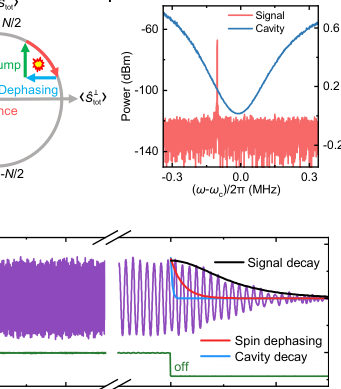
<figcaption class="paper-figure-caption"><b>Fig 1.</b> Fig. 1 Superradiant masing of a diamond under ambient conditions. a, Setup. A diamond containing an ensemble of NV−spins is placed inside a sapphire ring and coupled to a microwave cavity field (white lines, see also Extended Data Fig. E2a). A magnetic field B from an electromagnet, applied along the NV−⟨111⟩axis, tunes the spin-transition frequency. The spins are optically pumped by a 532 nm laser, and the emitted microwave signal is detected by a loop antenna. Gas-flow cooling applied from above stabilizes the sample temperature (Method). b, Schematic spectra of the cavity mode, the inhomogeneously broadened spin ensemble, and a single spin, with corresponding linewidth κc, σ, and γϕ. c,...</figcaption>
</figure>
<figure class="paper-figure-card">
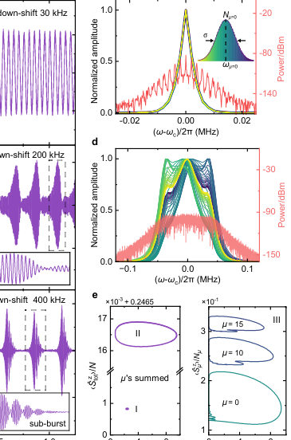
<figcaption class="paper-figure-caption"><b>Fig 2.</b> Fig. 2 Synchronization of macroscopic coherence in a superradiant diamond. a, Spectrum of the superradiant maser as a function of pump rate. The spin-cavity detuning is zero and the cavity quality factor Q ≃24, 580. The insets show representative spectra extracted from dashed lines. b, Time-domain signals corresponding to spectra I-III in (a), showing, from top to bottom, CW, periodic amplitude modulation, and bursts. For clarity, the carrier frequencies are downshifted to 30 kHz, 200 kHz and 400 kHz, correspondingly; the dashed-boxed regions are enlarged insets. c, Numerically simulated spectra of the spin and photon coherence in the regime of periodic amplitude modulation. Inset shows the...</figcaption>
</figure>
<figure class="paper-figure-card">
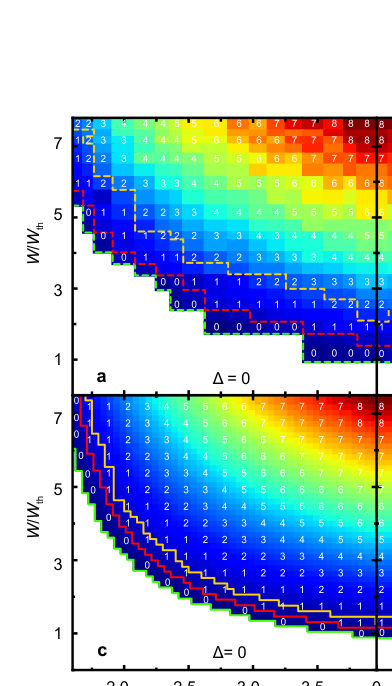
<figcaption class="paper-figure-caption"><b>Fig 3.</b> Fig. 4 Phase diagram of the superradiant diamond maser. a, Measured intra-cavity super- radiant power (color map) and number of peaks per burst/period (white integers) versus pump rate (normalized by the threshold pump rate Wth at Q = 40, 000 and ∆= 0) and cavity quality factor under the spin-cavity resonance condition (detuning ∆= 0). Dashed lines divide the superradiant phase diagram into phases: CW maser (between the green and red dashed lines); PAM superradiance with a frequency-comb spectrum (between the red and yellow dashed lines); and superradiant burst with a plateau spectrum (above the yellow dashed line). b, Same as (a), but as a function of the pump rate and the spin–cavity...</figcaption>
</figure>
</div>

<p><strong>Summary.</strong> This paper reports on achieving and characterizing sustained macroscopic quantum coherence in a superradiant solid using NV centers in diamond. By tuning system parameters, the authors observe distinct superradiant regimes—including continuous-wave, periodically modulated, and burst dynamics—confirming the solid-state generation of quantum light with many-body correlations. This establishes a robust platform for quantum technology research.</p>
<p><strong>Why it may be interesting.</strong> This work is highly relevant as it provides a solid-state, ambient-condition platform to study fundamental quantum phenomena like superradiance and time-crystalline order, bridging quantum optics with solid-state physics.</p>
<details>
<summary>Detailed structure</summary>
<p><strong>Main problem.</strong> The research aims to demonstrate and characterize sustained macroscopic quantum coherence in a superradiant solid operating under ambient conditions, overcoming limitations previously confining such phenomena to cryogenic or gaseous systems.</p>
<p><strong>Main result.</strong> The authors successfully demonstrated spontaneous generation and maintenance of macroscopic quantum coherence in NV-center spins in diamond, observing distinct superradiant regimes (CW, PAM, bursts) that confirm solid-state quantum light sources.</p>
<p><strong>Method.</strong> The study combines experimental measurements (microwave spectroscopy, time-domain signal recording) with theoretical modeling using mean-field theory and rate equations to analyze the spin-photon dynamics.</p>
<p><strong>Model / system.</strong> The physical system is a superradiant maser utilizing Nitrogen-Vacancy (NV) center spins in diamond coupled to a microwave cavity. The dynamics are governed by a Hamiltonian describing the interaction between the collective spin ensemble and the cavity field.</p>
<p><strong>Key observables.</strong> Continuous-wave (CW) maser emission, periodically amplitude-modulated (PAM) maser oscillations (suggesting a time crystal), and superradiant bursts, alongside coherence decay times.</p>
<p><strong>Important parameters / regimes.</strong> Cavity linewidth ($\kappa_c$), spin relaxation rates ($\gamma, \sigma, \gamma_\phi$), and the pumping rate ($W$) are key parameters used to access different operational regimes.</p>
<p><strong>Assumptions / limitations.</strong> The analysis relies on mean-field approximations for the collective spin dynamics, and later sections investigate the robustness of coherence against thermal noise.</p>
<p><strong>Figures summary.</strong> Figures illustrate the experimental setup, the spectral evolution across different pump rates, time-domain signal decay showing long-lived coherence, and Bloch sphere trajectories mapping the system's state in the three distinct operational regimes.</p>
<p><strong>Paper structure.</strong> The paper progresses by establishing the physical platform and Hamiltonian, detailing the experimental measurements across different pumping regimes (CW, PAM, Burst), and finally analyzing the underlying quantum dynamics, including the effects of thermal noise on coherence persistence.</p>
</details>
<details>
<summary>Abstract</summary>
<p>Macroscopic quantum coherence, such as in laser, Bose-Einstein condensates, superfluids, and superconductors, is important to fundamental physics and useful for quantum technologies. Superradiance provides a mechanism to produce coherence among a large number of particles and photons. Its implementation, however, has been limited to gaseous systems, solids at very low temperature, or short pulses. Here we demonstrate a solid-state superradiant maser under ambient conditions, which establishes long-lived coherence among about $10^{14}$ nitrogen-vacancy center spins in diamond and about $10^9$ photons in a microwave cavity. By varying the system parameters to access the above-threshold, well-above-threshold, and deep-above-threshold regimes, we observed continuous-wave masing, periodic amplitude modulation, and sequences of superradiant bursts, which are attributed, correspondingly, to macroscopic spin coherence synchronized at a fixed frequency, a coherent time crystal of large spins, and unsynchronized superradiant transients. This work demonstrates that macroscopic quantum coherence can be spontaneously generated and maintained in solids under ambient conditions and provides a solid-state platform for exploring bright quantum lights with many-body correlations.</p>
</details>
<p><sub><a href="#top">↑ back to top</a></sub></p>

<p><a id="paper-2608.24668"></a></p>
<h3 id="scalable-lindblad-noise-learning-via-stochastic-tensor-network-simulation"><a href="http://arxiv.org/abs/2608.24668v1">Scalable Lindblad Noise Learning via Stochastic Tensor-Network Simulation</a></h3>
<p><strong>Authors:</strong> Alejandro R. Ramos Ramos, Maximilian Fröhlich, Aaron Sander, Robert Wille, Martin Eigel, Michael Hintermüller, Patrick Gelß, Sebastian Pokutta<br>
<strong>Type:</strong> theory · <strong>Category:</strong> numerical methods · <strong>PDF:</strong> <a href="https://arxiv.org/pdf/2608.24668v1">https://arxiv.org/pdf/2608.24668v1</a><br>
<strong>Analysis basis:</strong> full PDF text, analyzed in chunks
<strong>Topic relevance:</strong> 🔥 <code>methods for driven-dissipative</code> <strong>4/5</strong> · <code>correlated / nonlocal dissipation</code> <strong>3/5</strong> · <code>driven-dissipative phase transition</code> <strong>3/5</strong> · <code>analog quantum simulation</code> <strong>2/5</strong> · <code>non-equilibrium universality</code> <strong>2/5</strong> · <code>quantum measurements</code> <strong>2/5</strong> · <code>Keldysh / 2PI / non-Gaussian methods</code> <strong>1/5</strong></p>
<div class="figure-strip-hint">↔ Scroll figures horizontally</div>
<div class="paper-figures-scroll">
<figure class="paper-figure-card">
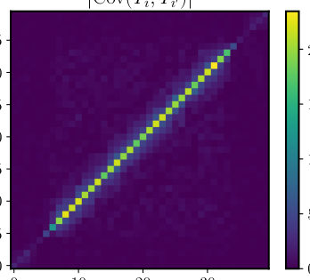
<figcaption class="paper-figure-caption"><b>Fig 1.</b> FIG. 1. Empirical covariance matrix |Cov(Yijk, Yi′j′k′)| for the X observable (j = j′ = 1) at time steps k = 37 and k′ = 41, estimated from Ntraj = 1000 trajectories for a system size of Nsite = 40. These specific values of j, j′, k and k′ were selected because, among all time-step pairs, they exhibit the largest maximum covariance distance ℓ, of about 4.</figcaption>
</figure>
<figure class="paper-figure-card">
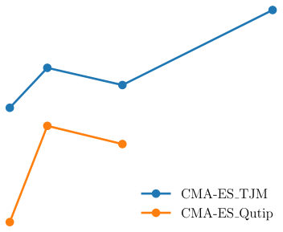
<figcaption class="paper-figure-caption"><b>Fig 2.</b> FIG. 2. Optimal cost-function value vs. number of sites for a local-noise-model optimization. Both curves are obtained using the CMA-ES optimizer with TJM (blue) and QuTiP</figcaption>
</figure>
<figure class="paper-figure-card">
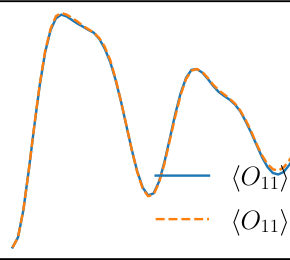
<figcaption class="paper-figure-caption"><b>Fig 3.</b> FIG. 3. First row: evolution of the cost-function √</figcaption>
</figure>
<figure class="paper-figure-card">
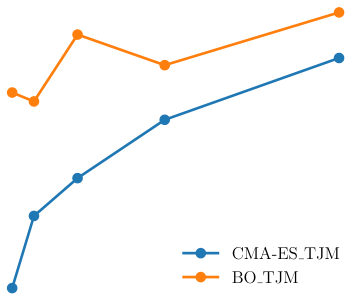
<figcaption class="paper-figure-caption"><b>Fig 4.</b> FIG. 4. Optimal cost-function value vs. number of sites for a global-noise-model optimization. Both curves are obtained using TJM as Lindblad solver with CMA-ES (blue) and BO (orange) as optimizers.</figcaption>
</figure>
<figure class="paper-figure-card">
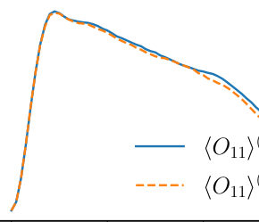
<figcaption class="paper-figure-caption"><b>Fig 5.</b> FIG. 5. First row: evolution of the cost-function √</figcaption>
</figure>
</div>

<p><strong>Summary.</strong> This paper introduces a scalable framework to learn unknown dissipation rates in large open quantum systems by combining the Tensor Jump Method (TJM) with gradient-free optimization. By minimizing a cost function based on local observable measurements, the authors overcome the computational limitations of previous methods. The work is significant for its combination of scalable numerics and rigorous theoretical guarantees on estimation accuracy.</p>
<p><strong>Why it may be interesting.</strong> This work directly addresses the practical bottleneck in simulating realistic quantum devices by providing a scalable, statistically rigorous method for characterizing environmental coupling, which is crucial for error mitigation and quantum control.</p>
<details>
<summary>Detailed structure</summary>
<p><strong>Main problem.</strong> The core challenge is developing a scalable method to estimate dissipation rates (Lindblad noise) in large open quantum systems, as traditional methods fail due to the computational cost of solving the Lindblad equation repeatedly.</p>
<p><strong>Main result.</strong> The authors propose a framework combining the Tensor Jump Method (TJM) with gradient-free optimization, demonstrating scalability to hundreds of sites while providing rigorous theoretical guarantees on the estimation error.</p>
<p><strong>Method.</strong> The approach uses TJM for stochastic simulation of open quantum dynamics, minimizing a least-squares cost-function defined on time series of local observable expectation values using optimization algorithms like CMA-ES or Bayesian Optimization.</p>
<p><strong>Model / system.</strong> The study uses the Ising model as a testbed, governed by the Lindblad master equation, incorporating both local and spatially correlated dissipation terms. The dynamics are simulated using tensor-network techniques (TJM).</p>
<p><strong>Key observables.</strong> Time series of local observable expectation values ($\langle O 
angle(t)$), and the purity $P(t) = 	ext{Tr}[
ho(t)^2]$.</p>
<p><strong>Important parameters / regimes.</strong> Dissipation rates ($\gamma$), system size ($N_{	ext{site}}$ up to 160), and the number of stochastic trajectories ($N_{	ext{traj}}$).</p>
<p><strong>Assumptions / limitations.</strong> The theoretical error analysis assumes a finite covariance distance, and the optimization relies on the cost-function being differentiable or amenable to gradient-free search.</p>
<p><strong>Figures summary.</strong> Figures compare optimization convergence (BO vs. CMA-ES) across various system sizes, show the evolution of global dissipation rates, and compare optimized vs. reference observable trajectories.</p>
<p><strong>Paper structure.</strong> The paper first establishes the problem and the TJM framework, then details the optimization setup using the Ising model, followed by rigorous theoretical analysis of the estimator variance and purity evolution, and concludes with numerical demonstrations of scalability.</p>
</details>
<details>
<summary>Abstract</summary>
<p>Learning dissipation rates in large-scale open quantum systems is a major obstacle for near-term quantum technologies, as existing Lindblad estimation methods are typically limited to small system sizes due to the computational complexity of repeatedly solving the Lindblad equation during optimization. Here, we propose a scalable noise-learning framework for Lindblad dissipation rates that combines a stochastic simulation method, the Tensor Jump Method (TJM), with gradient-free optimization of a least-squares cost-function defined on time series of local-observable expectation values. We demonstrate the approach on two noise models in the Ising model: a site-resolved (local) model, in which independent dissipation rates are learned for each site up to $N_{\mathrm{site}}=16$, and a spatially homogeneous (global) model with only seven parameters, scaled to $N_{\mathrm{site}}=160$ sites.We complement these numerical results with a series of exact, provable guarantees: the Frobenius variance of the TJM density-matrix estimator is shown to equal $(1-\mathrm{Tr}[ρ^2])/N_{\mathrm{traj}}$, an exact purity-based characterization of the stochastic estimation error; the corresponding purity evolution is proven to be monotonically non-increasing for Hermitian jump operators; and, under a finite covariance distance assumption, the standard deviation of the cost-function is shown to decrease with system size, so that fewer trajectories are needed to reach a fixed target accuracy as the system grows. Together, this combination of scalable numerics and rigorous theoretical guarantees positions TJM-based noise learning as a practical foundation for characterizing dissipation in large quantum devices and for guiding future work on error mitigation and quantum error correction.</p>
</details>
<p><sub><a href="#top">↑ back to top</a></sub></p>

<p><a id="paper-2608.24409"></a></p>
<h3 id="towards-stirling-cooler-operable-single-photon-sources-based-on-low-noise-gaas-quantum-dots"><a href="http://arxiv.org/abs/2608.24409v1">Towards Stirling cooler operable single-photon sources based on low-noise GaAs quantum dots</a></h3>
<p><strong>Authors:</strong> Maximilian Aigner, Jana Schlücking, Eva Schöll, Christian Weidinger, Gabriel Undeutsch, Ievgen Brytavskyi, Thomas Oberleitner, Tobias Maria Krieger, Ailton Jose Garcia Junior, Melina Peter, Thomas K. Bracht, Michał Gawełczyk, Saimon Filipe Covre da Silva, Santanu Manna, Yusuf Karli, Gregor Weihs, Doris E. Reiter, Armando Rastelli<br>
<strong>Type:</strong> both · <strong>Category:</strong> other · <strong>PDF:</strong> <a href="https://arxiv.org/pdf/2608.24409v1">https://arxiv.org/pdf/2608.24409v1</a><br>
<strong>Analysis basis:</strong> full PDF text, analyzed in chunks
<strong>Topic relevance:</strong> 🔥 <code>quantum optics experiment</code> <strong>4/5</strong> · <code>interference shaping light</code> <strong>3/5</strong> · <code>QC/QI experiment</code> <strong>1/5</strong> · <code>Tavis-Cummings &amp; cavity-many-emitter</code> <strong>1/5</strong> · <code>correlated / nonlocal dissipation</code> <strong>1/5</strong> · <code>driven-dissipative phase transition</code> <strong>1/5</strong> · <code>methods for driven-dissipative</code> <strong>1/5</strong> · <code>quantum measurements</code> <strong>1/5</strong></p>
<div class="figure-strip-hint">↔ Scroll figures horizontally</div>
<div class="paper-figures-scroll">
<figure class="paper-figure-card">
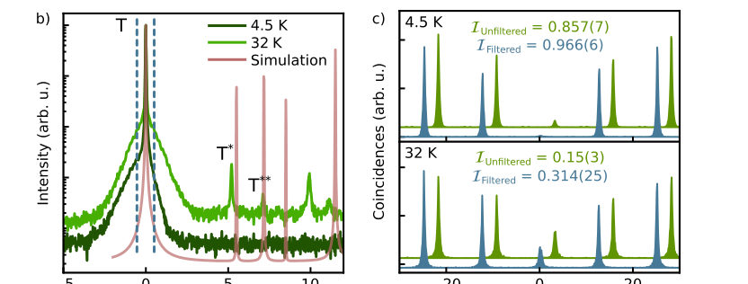
<figcaption class="paper-figure-caption"><b>Fig 1.</b> FIG. 1. a) Schematic few-level structure of the QD with the ground state |G⟩, the negative trion state |T⟩, and the first excited trion state |T ∗⟩. The green arrows mark the radiative decay channels, while the red and orange arrows indicate phonon- mediated population exchange between the trion states. b) Resonance fluorescence spectra of |T⟩at a temperature of 4.5 K (dark green) and 32 K (light green) as well as a simulated spectrum (brown). The intensity is normalized to the maximum intensity in the respective spectrum. c) Coincidence count histograms of HOM measurements taken at 4.5 K (top) and 32 K (bottom) with (blue) and without (green) spectral filtering of the phonon sideband...</figcaption>
</figure>
<figure class="paper-figure-card">
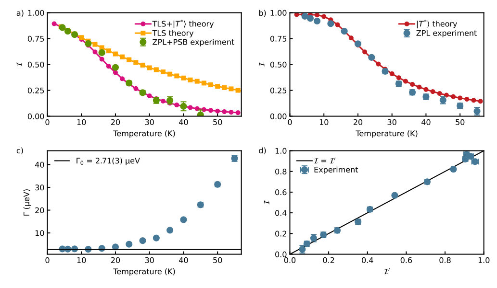
<figcaption class="paper-figure-caption"><b>Fig 2.</b> FIG. 2. a) Indistinguishability of the unfiltered spectrum as a function of temperature (green circles) together with a sim- ulation including only diagonal coupling (orange squares) as well as diagonal and excited trion state coupling (pink circles) b) Indistinguishability of the filtered spectrum as a function of temperature (blue circles) and a simulation including excited trion state coupling c) Measured linewidth (blue circles) and Fourier-transform limit (black line) of the ZPL as a function of temperature d) Measured indistinguishability and Γ0/Γ of the ZPL for each temperature. The black line indicates I = Γ0/Γ</figcaption>
</figure>
<figure class="paper-figure-card">
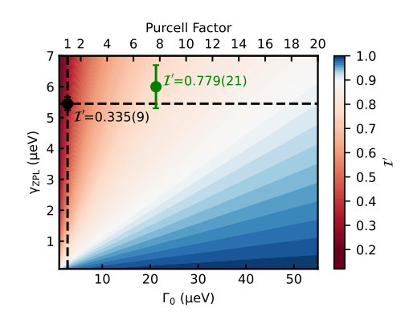
<figcaption class="paper-figure-caption"><b>Fig 3.</b> FIG. 3. Predicted photon indistinguishability after Eq. (6) of the PSB-filtered emission at 32 K for different Γ0 (bottom axis), corresponding Purcell factor (top axis), and γZPL. The black circle indicates the data obtained from the measure- ments presented in Fig. 2, and the vertical and horizontal lines indicate a Purcell factor of one and a constant γZPL, re- spectively. The green circle indicates another measurement on a different charge-tunable QD embedded in an optical mi- crocavity [54] with an estimated Purcell factor of 7.7(1). The corresponding indistinguishability of I′ = 0.80(3)is fully con- sistent with the predictions (I′ = 0.779(21)).</figcaption>
</figure>
</div>

<p><strong>Summary.</strong> This paper investigates improving single-photon sources in GaAs quantum dots to operate at higher temperatures. The authors model photon emission decay while accounting for phonon interactions and find that coupling to excited states severely degrades photon indistinguishability at moderate temperatures. By implementing cavity enhancement, they experimentally demonstrate a significant recovery of indistinguishability, advancing the feasibility of room-temperature quantum light sources.</p>
<p><strong>Why it may be interesting.</strong> This work is highly relevant to AMO physics and quantum optics as it directly addresses decoherence mechanisms (phonon coupling, excited state coupling) in solid-state emitters, providing experimental and theoretical pathways to enhance photon indistinguishability at higher temperatures.</p>
<details>
<summary>Detailed structure</summary>
<p><strong>Main problem.</strong> Developing single-photon sources for quantum technology that operate without demanding cryogenic cooling systems.</p>
<p><strong>Main result.</strong> The authors demonstrated that Purcell enhancement using cavity-enhanced emission can significantly improve photon indistinguishability, reaching 0.80(3) at 32 K, which is a record for that temperature.</p>
<p><strong>Method.</strong> The study combines theoretical modeling of carrier-phonon interactions with experimental measurements using two-photon interference (HOM setup) on GaAs quantum dots.</p>
<p><strong>Model / system.</strong> The physical system is a low-noise GaAs quantum dot emitting photons from the negative trion state. The dynamics are modeled using a few-level system approach incorporating Lindblad operators to account for radiative decay and phonon coupling.</p>
<p><strong>Key observables.</strong> Photon indistinguishability (I), emission linewidth, and temperature dependence of these quantities.</p>
<p><strong>Important parameters / regimes.</strong> Operating temperatures (e.g., 4.5 K, 32 K, 55 K), and the coupling strength to excited trion states.</p>
<p><strong>Assumptions / limitations.</strong> The analysis relies on modeling phonon interactions (diagonal coupling and coupling to excited states) and uses the Markov approximation for certain transitions.</p>
<p><strong>Figures summary.</strong> Figures illustrate the few-level structure, resonance fluorescence spectra at different temperatures, and coincidence count histograms from HOM measurements comparing filtered versus unfiltered emission.</p>
<p><strong>Paper structure.</strong> The paper progresses by establishing the need for high-indistinguishability sources, presenting the theoretical model incorporating phonon effects, detailing the experimental measurements across varying temperatures, and finally proposing and verifying Purcell enhancement as a solution to temperature-induced decoherence.</p>
</details>
<details>
<summary>Abstract</summary>
<p>For photonic quantum technology applications, sources capable of emitting photons with indistinguishability close to unity are essential. Ideally, these sources should not require demanding cooling systems. Here, we present temperature-dependent two-photon-interference measurements on photons produced by the radiative decay of the negative trion in a low-noise GaAs quantum dot, which are in quantitative agreement with theoretical calculations accounting for carrier-phonon interactions and coupling to excited states. While at at the lowest explored temperatures the emission linewidth reaches values only 6(2) % above the Fourier limit and the indistinguishability I between subsequently emitted photons reaches 0.966(6), the latter drops to 0.05(4) at 55 K. We show that this loss can be explained with the coupling with energetically close excited trion states and suggest that the photon indistinguishability at elevated temperatures can be increased by employing Purcell enhancement of the emission rate or by increasing the energy separation of the excited states. Using cavity-enhanced emission, we experimentally verify the first route and demonstrate an improvement in photon indistinguishability from 0.314(25) to 0.80(3) at 32 K, which - to our knowledge - is the highest reported value at such temperature.</p>
</details>
<p><sub><a href="#top">↑ back to top</a></sub></p>

<p><a id="paper-2608.23707"></a></p>
<h3 id="hamiltonian-learning-at-scale"><a href="http://arxiv.org/abs/2608.23707v1">Hamiltonian Learning at Scale</a></h3>
<p><strong>Authors:</strong> Nathan Johnson, Eugene Dumitrescu<br>
<strong>Type:</strong> theory · <strong>Category:</strong> numerical methods · <strong>PDF:</strong> <a href="https://arxiv.org/pdf/2608.23707v1">https://arxiv.org/pdf/2608.23707v1</a><br>
<strong>Analysis basis:</strong> full PDF text, analyzed in chunks
<strong>Topic relevance:</strong> 🔥 <code>methods for driven-dissipative</code> <strong>4/5</strong> · <code>analog quantum simulation</code> <strong>3/5</strong> · <code>quantum measurements</code> <strong>2/5</strong> · <code>correlated / nonlocal dissipation</code> <strong>1/5</strong> · <code>driven-dissipative phase transition</code> <strong>1/5</strong></p>
<div class="figure-strip-hint">↔ Scroll figures horizontally</div>
<div class="paper-figures-scroll">
<figure class="paper-figure-card">
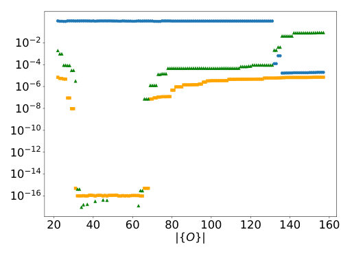
<figcaption class="paper-figure-caption"><b>Fig 1.</b> Figure 1. Hamiltonian learning data as a function of increas- ing operator basis cardinality |{𝑂}| for 𝑁= 5. The error in the Hamiltonian learning solution Δ𝑐(blue circles) falls to ∼1 × 10−5 when the the spectral gap Δ𝑠, between the lowest and next singular values, (green triangles) is well defined, i.e., when Δ𝑠≫𝑠0 is much larger than the lowest singular value 𝑠0 (orange squares).</figcaption>
</figure>
<figure class="paper-figure-card">
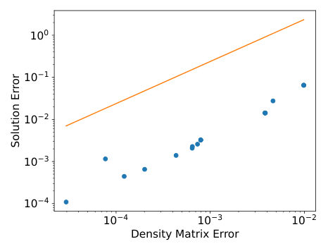
<figcaption class="paper-figure-caption"><b>Fig 2.</b> Figure 2. Scaling of solution error with error in 𝜌at N=5. The error remains below the analytical upper bound.</figcaption>
</figure>
<figure class="paper-figure-card">
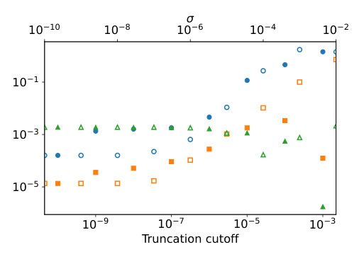
<figcaption class="paper-figure-caption"><b>Fig 3.</b> Figure 3. Scaling of solution error Δ𝑐(blue circles), the small- est singular value 𝑠0 (orange squares), and the spectral gap Δ𝑠(green triangles) with the truncation cutoff for the 𝜌MPO and the standard deviation 𝜎of Gaussian noise added to the correlation matrix at N=300. The trend with 𝜎is given by open shapes and the other trend by closed shapes. By 10−5</figcaption>
</figure>
</div>

<p><strong>Summary.</strong> This paper develops and analyzes a scalable protocol for learning a quantum system's Hamiltonian by analyzing its stability under various sources of numerical and measurement error. Using tensor network methods, the authors demonstrate the feasibility of learning complex Hamiltonians on large spin chains while providing quantitative error bounds for future experimental quantum simulation efforts.</p>
<p><strong>Why it may be interesting.</strong> The rigorous error analysis and scaling demonstration using tensor networks provide crucial, quantitative guidelines for designing and interpreting future experimental quantum simulation protocols, especially those involving noisy measurements.</p>
<details>
<summary>Detailed structure</summary>
<p><strong>Main problem.</strong> The core problem is determining the stability and error tolerance of protocols designed to learn a quantum system's Hamiltonian from limited measurements.</p>
<p><strong>Main result.</strong> The protocol can be scaled up to learn mixed-field Ising model Hamiltonians on $N=300$ sites, and its stability is shown to depend critically on the spectral gap relative to the error magnitude.</p>
<p><strong>Method.</strong> The work uses tensor network techniques (MPO) to simulate Hamiltonian learning, which relies on constructing and solving linear systems derived from approximate stationary states of the system's density matrix.</p>
<p><strong>Model / system.</strong> The study focuses on learning the Hamiltonian ($H$) for an Ising model with transverse and longitudinal fields, extending the analysis to open quantum systems described by Lindbladians.</p>
<p><strong>Key observables.</strong> Relative error of learned coefficients ($\Delta c$), Frobenius norm of the error ($\|H - 	ilde{H}\|_F$), and the spectral gap ($\Delta_s$).</p>
<p><strong>Important parameters / regimes.</strong> System size ($N=300$), inverse temperature ($eta$), and various error parameters like Taylor expansion truncation ($\epsilon_K$) and MPO compression error ($\epsilon_C$).</p>
<p><strong>Assumptions / limitations.</strong> The protocol assumes access to a thermal (Gibbs) state and relies on approximating this state using MPO techniques and Taylor series expansions, introducing quantifiable errors.</p>
<p><strong>Figures summary.</strong> Figures illustrate the linear growth of solution error with density matrix error for small systems, and show the stability of the protocol for large $N$ when errors are small compared to the spectral gap.</p>
<p><strong>Paper structure.</strong> The paper first establishes the protocol using stationary states and MPO tools, then rigorously analyzes error sources (truncation, compression) by deriving analytic bounds. It scales the simulation to large $N$ and discusses extensions to open systems using Quantum Fisher Information.</p>
</details>
<details>
<summary>Abstract</summary>
<p>Learning a quantum system's Hamiltonian is crucial for understanding and controlling its dynamics and has recently become a topic of widespread interest. To understand the learning protocol's error tolerances, i.e. its stability in the presence of inevitable errors, this work utilizes tensor network techniques to emulate Hamiltonian learning workflows at scale and with noise. Specifically, we employed a Hamiltonian learning technique based on approximate stationary states which are constructed using matrix product tools. We provide analytic bounds on the Hamiltonian learning estimation errors and perform numerical simulations that highlight learning error's stability under two families of errors. Using our workflow, we are able to scale up the protocol and learn mixed-field Ising model Hamiltonians of an $N=300$ site spin chain. By simulating the protocol at large scale, and empirically studying its practical limitations, our analysis of how errors affect the Hamiltonian learning process provides valuable lessons for future experiments. We conclude by discussing the avenues our work opens as well as future work that can support Hamiltonian learning experiments.</p>
</details>
<p><sub><a href="#top">↑ back to top</a></sub></p>

<p><a id="paper-2608.23711"></a></p>
<h3 id="observation-of-electron-spin-interactions-between-rydberg-atoms"><a href="http://arxiv.org/abs/2608.23711v1">Observation of electron spin interactions between Rydberg atoms</a></h3>
<p><strong>Authors:</strong> Le Ruan, Ziqi Zhou, Yuchen Guo, Chengshu Li, Cheng Chen<br>
<strong>Type:</strong> experiment · <strong>Category:</strong> other · <strong>PDF:</strong> <a href="https://arxiv.org/pdf/2608.23711v1">https://arxiv.org/pdf/2608.23711v1</a><br>
<strong>Analysis basis:</strong> full PDF text, analyzed in chunks
<strong>Topic relevance:</strong> 🔥 <code>Rydberg arrays</code> <strong>4/5</strong> · 🔥 <code>analog quantum simulation</code> <strong>4/5</strong> · <code>QC/QI experiment</code> <strong>2/5</strong> · <code>quantum optics experiment</code> <strong>1/5</strong></p>
<div class="figure-strip-hint">↔ Scroll figures horizontally</div>
<div class="paper-figures-scroll">
<figure class="paper-figure-card">
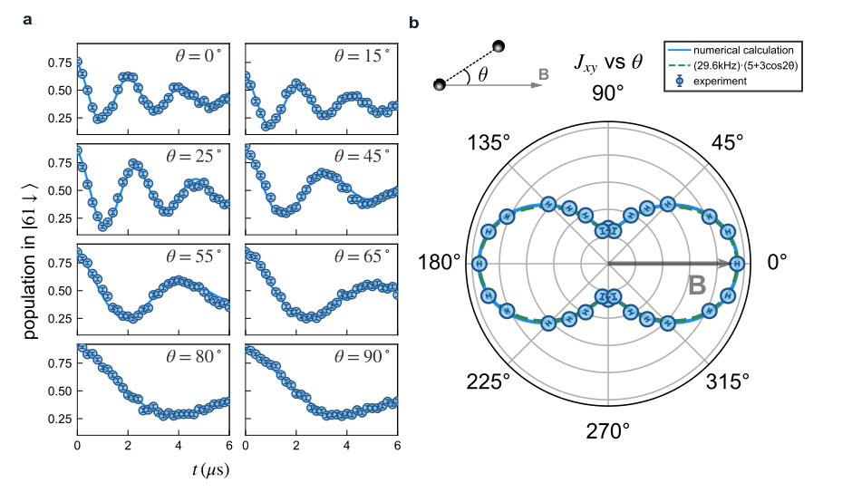
<figcaption class="paper-figure-caption"><b>Fig 1.</b> Figure 2. Observing electron spin exchange between Rydberg atoms. a. Experimental data of electron spin exchange at fixed atomic separation d = 9.66 µm for various θ. Solid curves represent fits to the experimental data using P(t) = A e−t/τ cos(2Jxyt/ℏ+ ϕ0)+C, with the same global phase offset ϕ0 shared across all angles. We present ideal-case models, simulations accounting for experimental imperfections and the measured data in the Supplementary Material [39]. b. Angular dependence of Jxy. We compare the experimental data with numerical calculation [40, 41] (solid line) and theoretical model Jxy(θ) = J(5 + 3 cos 2θ)/8 (dashed line). We obtain Jxy/h = 0.236 ± 0.002 MHz at θ = 0◦, yielding...</figcaption>
</figure>
<figure class="paper-figure-card">
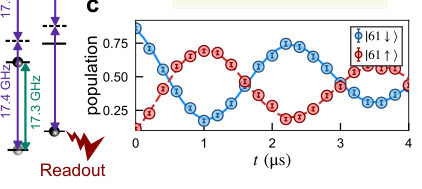
<figcaption class="paper-figure-caption"><b>Fig 2.</b> Figure 3. Checking the population in |61 ↑⟩. a. Microwave transi- tions used for the readout of population in |61 ↑⟩, including a two- photon π-pulse transferring |61 ↑⟩to |60 ↑⟩and a π-pulse transfer- ring |60 ↓⟩to |60P ↓⟩. b. Readout sequence for |61 ↑⟩. Since the two-photon π-pulse can also transfer |61 ↓⟩to |60 ↓⟩, which would also be deexcited and detected, we apply a second π-pulse driving |60 ↓⟩to |60P ↓⟩to eliminate this crosstalk. c. Experimental results for θ = 25◦with |60 ↑⟩readout scheme.</figcaption>
</figure>
<figure class="paper-figure-card">
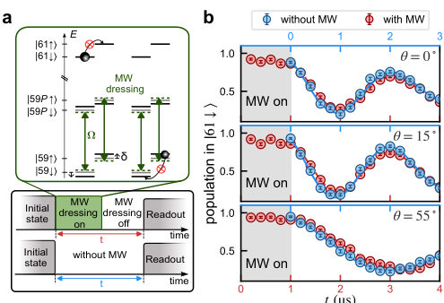
<figcaption class="paper-figure-caption"><b>Fig 3.</b> Figure 4. Engineering electron spin interactions by differen- tial AC Stark shift via microwave dressing. a Microwave dress- ing scheme: a driving field with a frequency centered between the |59 ↑⟩→|59P ↑⟩and |59 ↓⟩→|59P ↓⟩transitions imparts dif- ferential light shifts, thereby generating a differential energy shift between |59 ↑⟩and |59 ↓⟩. b. Dynamics with (shaded) and with- out MW dressing. The time axes of the two datasets are shifted by 1 µs to show that spin-exchange dynamics resume immediately upon turning off the MW dressing, displaying near-perfect agreement with the baseline without MW-dressing.</figcaption>
</figure>
<figure class="paper-figure-card">
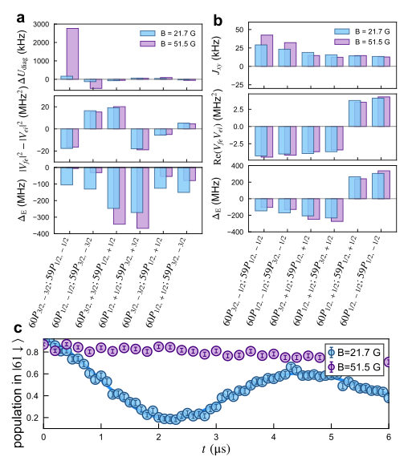
<figcaption class="paper-figure-caption"><b>Fig 4.</b> Figure 5. Tuning electron spin interactions through contribu- tions of perturbation channels via magnetic field. a. Perturba- tion channel-resolved decomposition of the diagonal energy splitting between the initial state |61 ↓, 59 ↑⟩and the final state |61 ↑, 59 ↓⟩ for θ = 60◦at different magnetic fields. Top panel: contribu- tions of individual intermediate states to ∆Udiag; middle panel: en- ergy difference of the matrix elements coupling the initial and fi- nal states through each intermediate state, where i, f, and e denote the initial, final, and intermediate states; bottom panel: detunings of the intermediate states. At B = 51.5 G, the detuning of this channel 60P3/2,−3/2; 59P1/2,−1/2...</figcaption>
</figure>
<figure class="paper-figure-card">
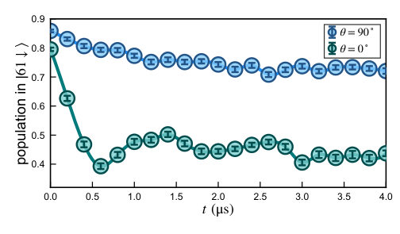
<figcaption class="paper-figure-caption"><b>Fig 5.</b> Figure 6. Many-body dynamics in one-dimensional chains. For θ = 0◦, Jxy = J, Jz = −J/2, the spin polarization of non- addressed atoms relaxes rapidly into the xy-plane. For θ = 90◦, Jxy = J/4, Jz = J, the strong z-polarization is largely retained with less relaxation, evidencing the dominance of the longitudinal coupling Jz. Both chains consist of 18 atoms at d = 9.66 µm, ini- tialized in staggered N´eel state along z.</figcaption>
</figure>
</div>

<p><strong>Summary.</strong> The researchers report the observation of electron spin interactions between Rydberg atoms, showing these interactions are driven by spin-orbit coupling and follow an anisotropic XXZ model. They demonstrate active control over this interaction using microwave dressing and magnetic fields. Crucially, they distinguish this genuine spin exchange from orbital exchange by measuring a pronounced angular anisotropy unique to the spin-exchange channel.</p>
<p><strong>Why it may be interesting.</strong> This work is highly relevant as it provides a clean, experimentally verified platform for realizing and controlling spin-spin interactions in arrays, directly mapping onto fundamental models like the Heisenberg-Kitaev model, which is a major focus in quantum simulation.</p>
<details>
<summary>Detailed structure</summary>
<p><strong>Main problem.</strong> The study aims to observe and characterize the electron spin interactions between Rydberg atoms, specifically distinguishing this genuine spin exchange from purely orbital exchange mechanisms.</p>
<p><strong>Main result.</strong> The authors successfully observed coherent electron spin exchange dynamics governed by an anisotropic XXZ model, and crucially, they distinguished this spin interaction from orbital exchange by measuring a strong angular dependence in the spin-exchange coupling.</p>
<p><strong>Method.</strong> The research employs controlled Rydberg atom arrays, utilizing microwave dressing and magnetic field tuning to manipulate and measure the spin-exchange dynamics between atoms.</p>
<p><strong>Model / system.</strong> The system involves Rydberg atoms (e.g., Rb) where spin qubits are encoded in Zeeman sublevels. The interaction is modeled by an anisotropic XXZ Hamiltonian, $H = \sum_{i<j} [J_{xy}(	heta_{ij})(S_x^i S_x^j + S_y^i S_y^j) + J_z(	heta_{ij})S_z^i S_z^j]$, which arises from spin-orbit coupling via second-order dipole perturbation.</p>
<p><strong>Key observables.</strong> Coherent electron spin exchange dynamics, coupling strengths ($J_{xy}, J_z$), and the angular dependence of the exchange coupling $J_{xy}(	heta) \propto (5 + 3 \cos 2	heta)/8$.</p>
<p><strong>Important parameters / regimes.</strong> Interatomic separation ($d = 9.66 \mu	ext{m}$), magnetic field strength (up to $51.5 	ext{ G}$), and the angle $    heta$ defining the relative orientation of the atoms.</p>
<p><strong>Assumptions / limitations.</strong> The analysis relies on second-order dipole perturbation theory to derive the spin-orbit coupling mechanism, and the fidelity of the measurement is corrected for various experimental imperfections (SPAM errors).</p>
<p><strong>Figures summary.</strong> Figures illustrate the comparison between spin exchange vs. conventional dipole-dipole exchange, show the time evolution of spin populations under microwave dressing, and demonstrate the contrast between the strongly anisotropic $\Delta n=2$ spin exchange and the nearly isotropic $\Delta n=1$ orbital exchange.</p>
<p><strong>Paper structure.</strong> The paper progresses by first establishing the observation of spin exchange, detailing control mechanisms (dressing, field tuning), quantifying the interaction anisotropy via theoretical mapping to the XXZ model, and finally providing a definitive diagnostic by contrasting the angular dependence of spin exchange ($\Delta n=2$) against orbital exchange ($\Delta n=1$).</p>
</details>
<details>
<summary>Abstract</summary>
<p>We report the observation of electron spin interactions between Rydberg atoms, which are driven by spin-orbit coupling through second-order dipole perturbation and exhibit a spatial anisotropy governed by the atomic configuration. Specifically, we observe coherent electron spin exchange dynamics, with the measured coupling strength agreeing well with both numerical calculations and theoretical models. Furthermore, we show that global microwave dressing enables active engineering and dynamical freezing of the spin exchange by introducing a differential AC Stark shift between the participating states. Additionally, we achieve tunability of the interaction by applying a stronger magnetic field, which effectively modifies the energy contributions of the underlying spin-orbit coupling channels. Finally, measuring spin dynamics in one-dimensional multi-atom chains aligned parallel or perpendicular to the magnetic field provides a self-consistent validation of the anisotropic XXZ framework. This electron spin interaction natively features spin-position coupling and enables a natural mapping onto the Heisenberg-Kitaev model. Our findings reveal a new class of electron spin-spin interactions among Rydberg atoms, expanding the scope of quantum simulation with Rydberg atom arrays.</p>
</details>
<p><sub><a href="#top">↑ back to top</a></sub></p>

<p><a id="paper-2608.23954"></a></p>
<h3 id="tunable-mediated-interactions-near-spontaneous-symmetry-breaking-from-yukawa-to-coulomb-and-dzyaloshinskii-moriya-interactions"><a href="http://arxiv.org/abs/2608.23954v1">Tunable Mediated Interactions Near Spontaneous Symmetry Breaking: From Yukawa to Coulomb and Dzyaloshinskii--Moriya Interactions</a></h3>
<p><strong>Authors:</strong> Hoshu Hiyane, Hiroyuki Tajima<br>
<strong>Type:</strong> theory · <strong>Category:</strong> quantum gases · <strong>PDF:</strong> <a href="https://arxiv.org/pdf/2608.23954v1">https://arxiv.org/pdf/2608.23954v1</a><br>
<strong>Analysis basis:</strong> full PDF text, analyzed in chunks
<strong>Topic relevance:</strong> 🔥 <code>analog quantum simulation</code> <strong>4/5</strong> · <code>Keldysh / 2PI / non-Gaussian methods</code> <strong>3/5</strong> · <code>correlated / nonlocal dissipation</code> <strong>2/5</strong> · <code>methods for driven-dissipative</code> <strong>1/5</strong></p>
<div class="figure-strip-hint">↔ Scroll figures horizontally</div>
<div class="paper-figures-scroll">
<figure class="paper-figure-card">
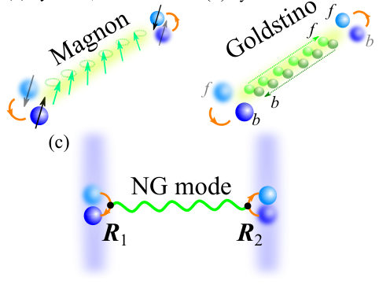
<figcaption class="paper-figure-caption"><b>Fig 1.</b> FIG. 1. Schematics of mediated interactions between two im- purities. Three types of systems (I) Fermi–Fermi, (II) Bose– Bose, and (III) Bose–Fermi mixture are considered. (a) For a ferromagnetic medium (System I, II), a magnon excitation mediates the spin-exchange interaction between two impuri- ties. (b) For a Bose–Fermi mixture (System III), a goldstino excitation mediates an interaction that exchanges the two sta- tistically different impurities. (c) Proposed detection of long- range interactions mediated by the NG mode. Two impurities are localized at positions R1 and R2 by the optical tweezers (represented by shaded area) and involve the state-exchange interactions with the medium,...</figcaption>
</figure>
<figure class="paper-figure-card">
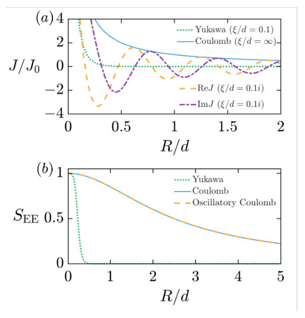
<figcaption class="paper-figure-caption"><b>Fig 2.</b> FIG. 2. (a) Long-range mediated interaction J(R) between impurities. The range of interaction ξ = p</figcaption>
</figure>
<figure class="paper-figure-card">
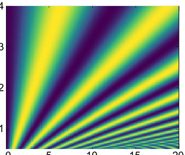
<figcaption class="paper-figure-caption"><b>Fig 3.</b> FIG. 3. Transition probability P(t) at different R/d for ξ = ∞, where Coulomb-type long range exchange interac- tion emerge. The short-distance region R/d ≤0.5 is omitted because P(t) oscillates too rapidly to be resolved on this scale.</figcaption>
</figure>
</div>

<p><strong>Summary.</strong> This paper details how tunable, long-range interactions can be engineered between impurities by coupling them to a quantum medium bath near spontaneous symmetry breaking. By controlling the gap of the mediating Nambu-Goldstone mode, the interaction can be tuned between short-range Yukawa, long-range Coulomb, and Dzyaloshinskii-Moriya forms. This offers a powerful platform for simulating complex spin models using cold atoms.</p>
<p><strong>Why it may be interesting.</strong> This work directly connects fundamental concepts of symmetry breaking (NG modes) to controllable, long-range quantum interactions, providing a concrete roadmap for designing quantum simulators using ultracold atomic gases.</p>
<details>
<summary>Detailed structure</summary>
<p><strong>Main problem.</strong> The paper proposes a theoretical framework to realize and characterize tunable, long-range mediated interactions between impurities using Nambu-Goldstone (NG) modes near spontaneous symmetry breaking (SSB).</p>
<p><strong>Main result.</strong> The mediated interaction can be tuned to exhibit distinct long-range behaviors: Yukawa (gapped), Coulomb (gapless), or oscillatory-Coulomb (Dzyaloshinskii-Moriya-like) couplings.</p>
<p><strong>Method.</strong> The effective interaction is derived by calculating the two-impurity coupling by tracing out the medium bath excitations, utilizing the medium's retarded susceptibility $\chi_{ret}$.</p>
<p><strong>Model / system.</strong> The system involves two distinguishable impurities coupled to a quantum medium bath, which can be realized in various cold atom mixtures, such as Fermi-Fermi, Bose-Bose, or Bose-Fermi mixtures.</p>
<p><strong>Key observables.</strong> Effective interaction strength $J(R)$, entanglement entropy, and the phase/amplitude of the interaction, which can be probed via Rabi oscillations or Ramsey interferometry.</p>
<p><strong>Important parameters / regimes.</strong> The interaction range ($\xi$) and the type of coupling (Yukawa, Coulomb, DM) are controlled by tuning the gap of the NG mode relative to the energy difference between the impurities ($\omega_{	ext{gap}} - \Delta_1 + \Delta_2$).</p>
<p><strong>Assumptions / limitations.</strong> The derivation relies on the leading order approximation of the cumulative expansion and uses Random Phase Approximation (RPA) for the itinerant ferromagnetic case.</p>
<p><strong>Figures summary.</strong> Figure 1 schematically illustrates the three physical systems (Fermi-Fermi, Bose-Bose, Bose-Fermi) and the proposed detection setup using optical tweezers. Figure 2 relates to entanglement entropy measurements.</p>
<p><strong>Paper structure.</strong> The paper builds from the general Hamiltonian formulation, derives the effective interaction via the medium susceptibility, and then analyzes the resulting interaction structure in different physical regimes (Yukawa, Coulomb, DM) based on the gap tuning.</p>
</details>
<details>
<summary>Abstract</summary>
<p>We propose a realization of tunable long-range mediated interactions generated by Nambu-Goldstone (NG) modes near spontaneous symmetry breaking. An effective exchange interaction emerges between two distinguishable impurities proportional to the retarded susceptibility mediated by the bath particles. The interaction is mediated by emergent NG modes associated with symmetry breaking in systems, namely the magnon mode in a repulsive two-component Fermi or Bose gas, or the goldstino mode in a Bose-Fermi mixture. When the NG mode is gapped by explicit symmetry breaking, the interaction has a Yukawa-type short-ranged interaction, whereas the gapless limit gives a Coulomb law. Above the NG mode threshold, the Dzyaloshinskii-Moriya-like cross product coupling emerges in a long-range form. Our proposal paves a way towards the realization of a quantum simulator of spin models and polarons with controllable non-local interactions.</p>
</details>
<p><sub><a href="#top">↑ back to top</a></sub></p>

<p><a id="paper-2608.24243"></a></p>
<h3 id="three-slit-interference-with-a-which-path-memory-ancilla-a-bright-dark-state-formulation"><a href="http://arxiv.org/abs/2608.24243v1">Three-slit interference with a which-path memory ancilla: A bright-dark state formulation</a></h3>
<p><strong>Authors:</strong> Ajay Kumar, Guruprasad Kadam, Anirban Pathak<br>
<strong>Type:</strong> theory · <strong>Category:</strong> quantum information and computing · <strong>PDF:</strong> <a href="https://arxiv.org/pdf/2608.24243v1">https://arxiv.org/pdf/2608.24243v1</a><br>
<strong>Analysis basis:</strong> full PDF text, analyzed in chunks
<strong>Topic relevance:</strong> 🔥 <code>interference shaping light</code> <strong>4/5</strong> · <code>methods for driven-dissipative</code> <strong>2/5</strong> · <code>quantum measurements</code> <strong>2/5</strong> · <code>correlated / nonlocal dissipation</code> <strong>1/5</strong></p>
<div class="figure-strip-hint">↔ Scroll figures horizontally</div>
<div class="paper-figures-scroll">
<figure class="paper-figure-card">
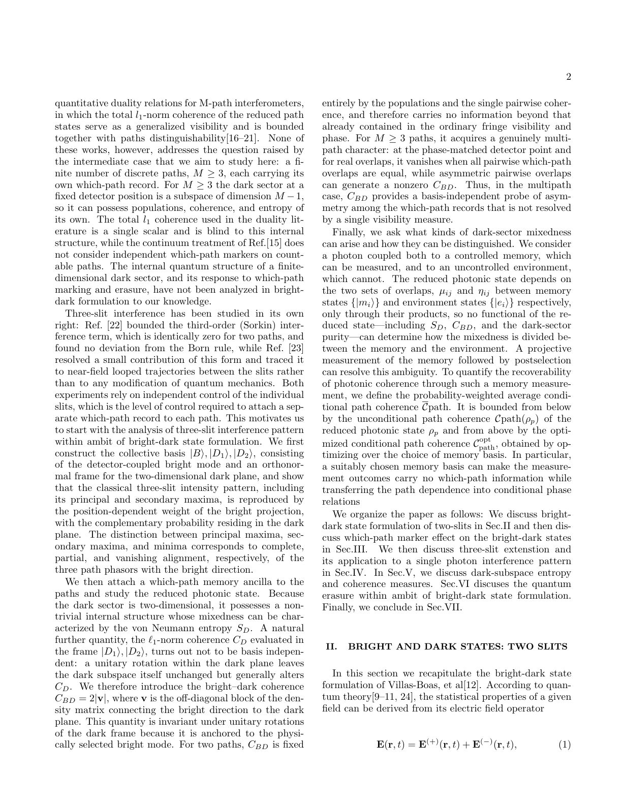
<figcaption class="paper-figure-caption"><b>Fig 1.</b> Low-resolution page preview, page 2</figcaption>
</figure>
<figure class="paper-figure-card">
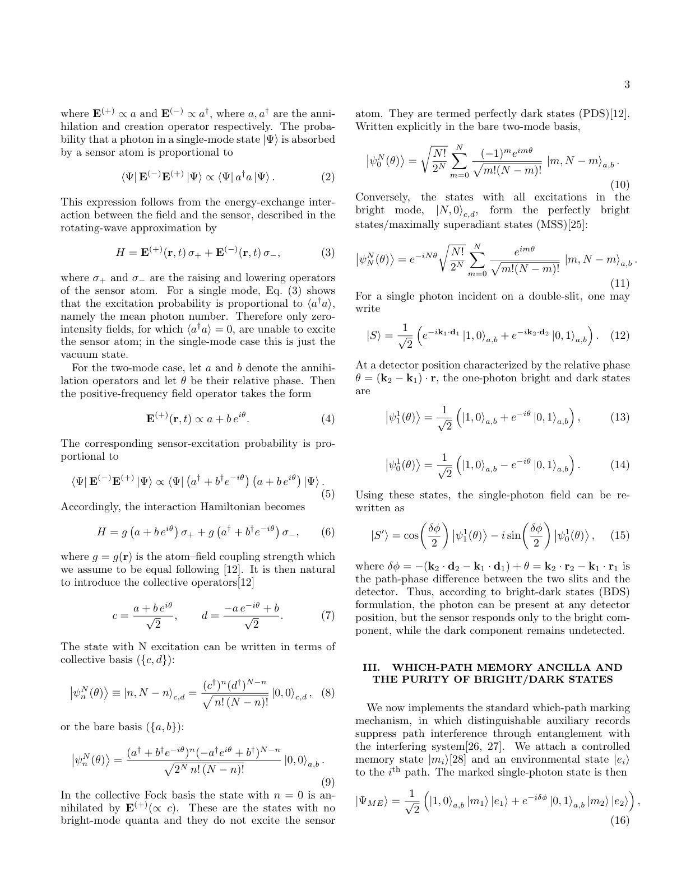
<figcaption class="paper-figure-caption"><b>Fig 2.</b> Low-resolution page preview, page 3</figcaption>
</figure>
<figure class="paper-figure-card">
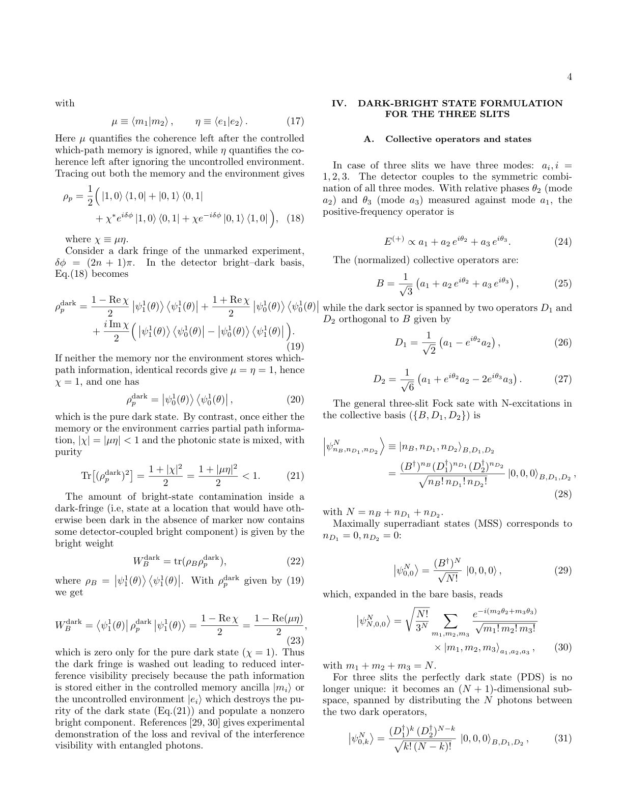
<figcaption class="paper-figure-caption"><b>Fig 3.</b> Low-resolution page preview, page 4</figcaption>
</figure>
<figure class="paper-figure-card">
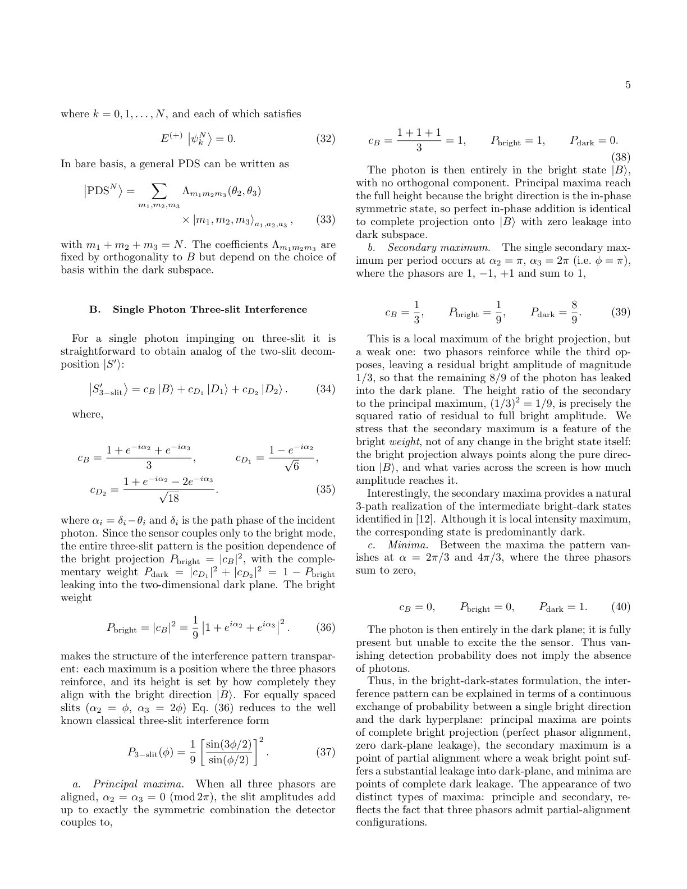
<figcaption class="paper-figure-caption"><b>Fig 4.</b> Low-resolution page preview, page 5</figcaption>
</figure>
<figure class="paper-figure-card">
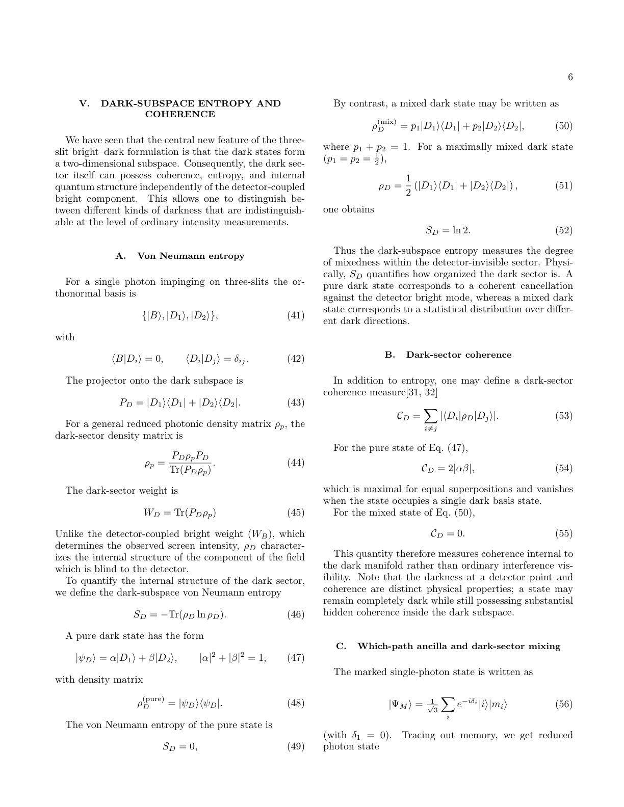
<figcaption class="paper-figure-caption"><b>Fig 5.</b> Low-resolution page preview, page 6</figcaption>
</figure>
</div>

<p><strong>Summary.</strong> This theoretical paper analyzes three-slit interference using the bright-dark state formalism to study the role of a which-path memory ancilla. It introduces a basis-invariant coherence measure, $C_{BD}$, which quantifies the multi-path quantum structure. The key finding is the ability to decompose the total coherence loss into a portion recoverable by measuring the memory and an irreducible deficit caused by the environment.</p>
<p><strong>Why it may be interesting.</strong> This work provides a rigorous, quantitative framework for understanding how quantum coherence is degraded and potentially recovered in multi-path interference experiments by explicitly separating environmental decoherence from information stored in auxiliary quantum memories.</p>
<details>
<summary>Detailed structure</summary>
<p><strong>Main problem.</strong> The paper investigates how path information stored in a which-path memory ancilla affects the interference pattern observed in a three-slit setup.</p>
<p><strong>Main result.</strong> It establishes that the basis-invariant coherence measure, $C_{BD}$, quantifies the genuinely multi-path contribution arising from asymmetries in which-path overlaps for three or more slits.</p>
<p><strong>Method.</strong> The analysis uses the bright-dark state description to decompose the photonic state and employs coherence measures, such as the von Neumann entropy and various coherence terms, to quantify interference visibility loss.</p>
<p><strong>Model / system.</strong> The model is a three-slit interference experiment analyzed using the bright-dark state formulation, involving a photon state coupled to a memory ancilla and an environment.</p>
<p><strong>Key observables.</strong> Von Neumann entropy ($S_D$), dark-sector coherence ($C_D$), and the basis-invariant bright-dark coherence ($C_{BD}$).</p>
<p><strong>Important parameters / regimes.</strong> The number of slits ($M \ge 3$), and the overlaps ($\mu_{ij}, \eta_{ij}$) between path amplitudes.</p>
<p><strong>Assumptions / limitations.</strong> The analysis assumes the ability to attach a separate which-path record to each path and relies on decomposing the coherence deficit into recoverable and irreducible parts.</p>
<p><strong>Paper structure.</strong> The paper progresses by first defining the bright-dark state for $M$ slits, then introducing coherence measures like $C_{BD}$, and finally developing a decomposition showing how memory measurement allows recovery of path coherence lost due to accessible memory overlaps.</p>
</details>
<details>
<summary>Abstract</summary>
<p>In this paper, we study the effect of a which-path memory ancilla on the three-slit interference pattern within the framework of the bright--dark state description [Phys. Rev. Lett. 134, 133603 (2025)]. Whereas two slits give one bright mode, a photonic mode that couples to the detector atoms, and one dark mode, which does not couple to the detector atoms, three slits lead to one detector-coupled bright mode and a two-dimensional dark-mode subspace in the three-dimensional path space. We first discuss the classical three-slit interference pattern in terms of probability leakage into the dark subspace. We then study the von Neumann entropy $S_D$ of the dark subspace and the coherence measures of the reduced photonic state obtained by tracing out the memory: dark-sector coherence $C_D$ and bright--dark coherence $C_{BD}$. These quantities bring out the internal quantum structure of the two-dimensional dark subspace. We show that, whereas $C_D$ is not by itself a basis-independent physical observable, $C_{BD}$ is basis-invariant. We establish that, for two paths, $C_{BD}$ is fixed entirely by the populations and the single pairwise coherence, whereas for multiple paths, $M\geq 3$, it acquires a genuinely multipath contribution generated by asymmetry among the pairwise which-path overlaps. Finally, we distinguish the part of the path-coherence loss that is recoverable through a suitable measurement of the memory from the irreducible coherence deficit imposed by an uncontrolled environment.</p>
</details>
<p><sub><a href="#top">↑ back to top</a></sub></p>

<p><a id="paper-2608.24495"></a></p>
<h3 id="algaas-nanowires-as-a-universal-platform-for-gaas-ingaas-and-inas-quantum-dots"><a href="http://arxiv.org/abs/2608.24495v1">AlGaAs nanowires as a universal platform for GaAs, InGaAs, and InAs quantum dots</a></h3>
<p><strong>Authors:</strong> Rohan Radhakrishnan, Rodion Reznik, Gilles Patriarche, Igor Ilkiv, Konstantin Kotlyar, Anna Andreeva, George Cirlin, Nika Akopian<br>
<strong>Type:</strong> experiment · <strong>Category:</strong> quantum information and computing · <strong>PDF:</strong> <a href="https://arxiv.org/pdf/2608.24495v1">https://arxiv.org/pdf/2608.24495v1</a><br>
<strong>Analysis basis:</strong> full PDF text, analyzed in chunks
<strong>Topic relevance:</strong> 🔥 <code>QC/QI experiment</code> <strong>4/5</strong> · <code>quantum optics experiment</code> <strong>3/5</strong> · <code>quantum measurements</code> <strong>1/5</strong></p>
<div class="figure-strip-hint">↔ Scroll figures horizontally</div>
<div class="paper-figures-scroll">
<figure class="paper-figure-card">
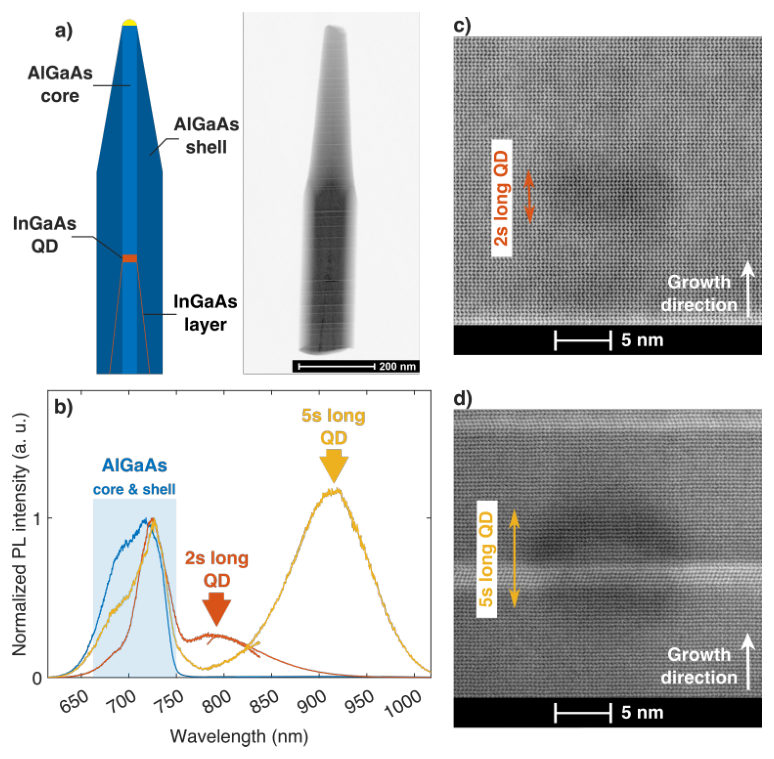
<figcaption class="paper-figure-caption"><b>Fig 1.</b> Figure 1: Structural and optical characterization of InGaAs QDs embedded in</figcaption>
</figure>
<figure class="paper-figure-card">
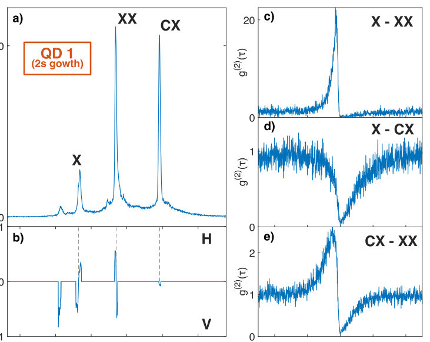
<figcaption class="paper-figure-caption"><b>Fig 2.</b> Figure 2: Optical characterization of a 2 s InGaAs QD embedded in an AlGaAs</figcaption>
</figure>
<figure class="paper-figure-card">
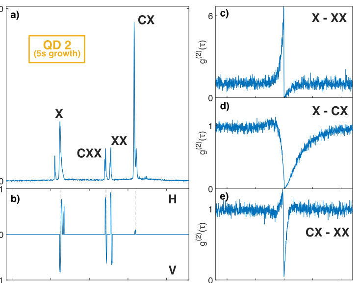
<figcaption class="paper-figure-caption"><b>Fig 3.</b> Figure 3: Optical characterization of a 5 s InGaAs QD embedded in an AlGaAs</figcaption>
</figure>
<figure class="paper-figure-card">
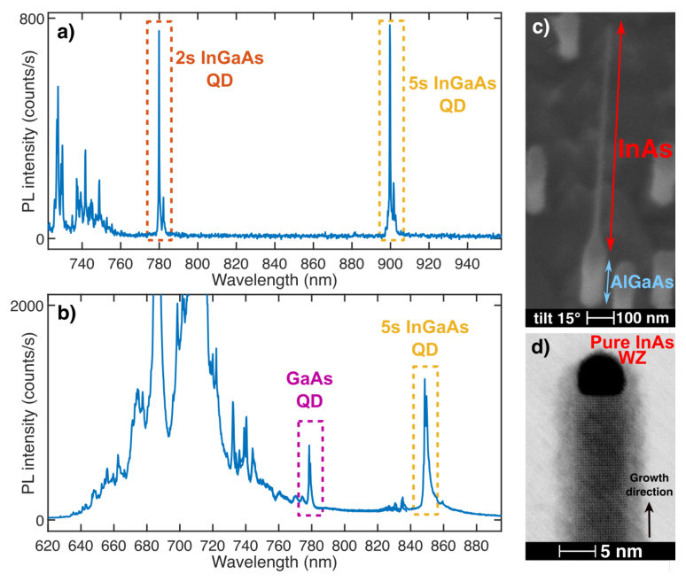
<figcaption class="paper-figure-caption"><b>Fig 4.</b> Figure 4: Two different QDs in a nanowire, and a pure InAs segment on top of a</figcaption>
</figure>
</div>

<p><strong>Summary.</strong> The authors introduce AlGaAs nanowires as a universal platform for fabricating and characterizing quantum dots made of GaAs, InGaAs, and InAs. By precisely controlling the growth process, they achieve deterministic tuning of the emission wavelength and successfully co-integrate different materials into single devices. This establishes a crucial building block for scalable, on-chip quantum light sources.</p>
<p><strong>Why it may be interesting.</strong> This work directly addresses the hardware requirements for quantum networking by providing a scalable, multi-material platform for generating on-demand, spectrally tunable single-photon sources.</p>
<details>
<summary>Detailed structure</summary>
<p><strong>Main problem.</strong> The challenge is to create a single, universal platform for optical quantum dots (QDs) that allows for wavelength tunability across a broad spectral range and enables the co-integration of multiple different QD materials.</p>
<p><strong>Main result.</strong> AlGaAs nanowires are successfully demonstrated as a universal host material capable of growing and characterizing multiple QD types (GaAs, InGaAs, InAs) with tunable emission wavelengths and confirmed single-photon emission.</p>
<p><strong>Method.</strong> The research employs Molecular Beam Epitaxy (MBE) for growth, coupled with advanced optical characterization techniques like micro-photoluminescence (PL) spectroscopy, polarization measurements, and cross-correlation measurements.</p>
<p><strong>Model / system.</strong> The physical system is the AlGaAs nanowire acting as a host matrix for embedded semiconductor quantum dots (InGaAs, GaAs, InAs). The study investigates the excitonic and biexcitonic transitions within these confined structures.</p>
<p><strong>Key observables.</strong> QD emission wavelength (tunable from $\sim 780 	ext{ nm}$ to $\sim 920 	ext{ nm}$), single-photon statistics ($g_2(0) \approx 0$), fine-structure splitting, and the observation of multiple excitonic transitions (X, XX, CX).</p>
<p><strong>Important parameters / regimes.</strong> Growth time (used to tune emission wavelength), QD height, and the material composition (GaAs, InGaAs, InAs).</p>
<p><strong>Assumptions / limitations.</strong> The primary assumption is that the AlGaAs nanowire structure provides a stable and controllable template for integrating disparate semiconductor materials into functional quantum emitters.</p>
<p><strong>Figures summary.</strong> Figures illustrate the tunability of PL spectra across different growth times, confirm single-photon emission via cross-correlation, and show structural evidence (STEM/EDX) of pure InAs segments grown on the nanowire.</p>
<p><strong>Paper structure.</strong> The paper progresses by first establishing the basic tunability of InGaAs QDs, then demonstrating the versatility by co-integrating multiple QD types (e.g., GaAs/InGaAs), and finally extending the platform's capability to include pure InAs segments, confirming material compatibility across the full GaAs-InAs range.</p>
</details>
<details>
<summary>Abstract</summary>
<p>Optical quantum dots (QDs) are central to photonic quantum technologies, with fabrication approaches tailored to different spectral ranges. A key challenge, however, is the realization of a unified platform$\unicode{x2014}$a single growth method combined with a host material offering a designable architecture$\unicode{x2014}$enabling wavelength tunability across the full emission range and co-integration of multiple quantum dots. Here, we introduce AlGaAs nanowires as a universal host for GaAs, InGaAs, and InAs QDs. Building on our previous demonstration of high-quality GaAs QDs, we realize InGaAs QDs with tunable emission by varying the growth duration from 2 to 5 s, achieving emission at 780 and 920 nm. We further showcase the platform's versatility for multi-quantum-dot devices by co-integrating two InGaAs QDs, as well as GaAs and InGaAs QDs within a single nanowire. Finally, we initiate a first step toward pure InAs QDs by growing a pristine InAs segment on AlGaAs nanowires, demonstrating material compatibility.</p>
</details>
<p><sub><a href="#top">↑ back to top</a></sub></p>

<p><a id="paper-2608.23694"></a></p>
<h3 id="universal-spin-position-coupled-rydberg-interactions"><a href="http://arxiv.org/abs/2608.23694v1">Universal Spin-Position Coupled Rydberg Interactions</a></h3>
<p><strong>Authors:</strong> Chengshu Li, Hui Zhai<br>
<strong>Type:</strong> theory · <strong>Category:</strong> other · <strong>PDF:</strong> <a href="https://arxiv.org/pdf/2608.23694v1">https://arxiv.org/pdf/2608.23694v1</a><br>
<strong>Analysis basis:</strong> full PDF text, analyzed in chunks
<strong>Topic relevance:</strong> 🔥 <code>Rydberg arrays</code> <strong>4/5</strong> · 🔥 <code>analog quantum simulation</code> <strong>4/5</strong></p>
<div class="figure-strip-hint">↔ Scroll figures horizontally</div>
<div class="paper-figures-scroll">
<figure class="paper-figure-card">
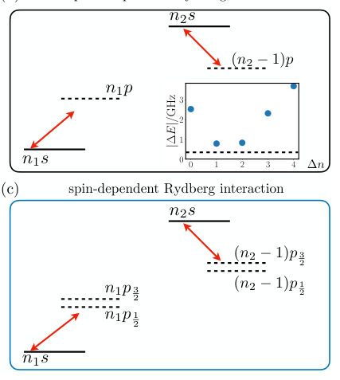
<figcaption class="paper-figure-caption"><b>Fig 1.</b> Figure 1: From light shift to Rydberg interactions. (a) When a laser drives the atom, the detuning ∆E and the spin–orbit splitting ∆f define two competing energy scales. Depending on whether ∆E ≫∆f or ∆E ∼∆f, the induced light shift becomes either spin-independent (scalar) or spin-dependent (vector). (b) In conventional Rydberg interactions, the elec- tric dipole–dipole coupling acts as a perturbation, and the relevant energy defect ∆E = En1,p + En2−1,p −En1,s −En2,s is typically much larger than ∆f. The inset shows ∆E as a function of ∆n = n1 −n2. (c) When ∆E becomes com- parable to ∆f, the fine-structure splitting of the intermediate states must be explicitly taken into account, resulting...</figcaption>
</figure>
<figure class="paper-figure-card">
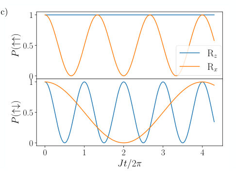
<figcaption class="paper-figure-caption"><b>Fig 2.</b> Figure 2: Symmetry analysis and experimental consequences. (a) The spin-dependent Rydberg interaction involves two physical mechanisms: the electric dipole–dipole interaction between atoms and the electron spin–orbit coupling within each atom. (b) Two configurations with distinct spin dynam- ics. The spin quantization axis is along ˆz, and the interatomic displacement is either parallel to ˆz (Rz configuration) or to ˆx (Rx configuration). (c) Spin dynamics for two initial states |↑↑⟩and |↑↓⟩in the two configurations (Rz and Rx).</figcaption>
</figure>
<figure class="paper-figure-card">
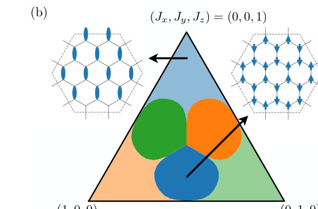
<figcaption class="paper-figure-caption"><b>Fig 3.</b> Figure 3: Realizing the Kitaev–Heisenberg model. (a) Left: Schematic of the Kitaev model, where the spin interactions are of the form Sγ i Sγ j with γ = x, y, z on the three distinct bond types. Right: Proposed quantum simulation of the Kitaev–Heisenberg model with α = −3/2. The atoms are ar- ranged into two two-dimensional layers, with nearest-neighbor bonds aligned along the x, y, and z axes. The shaded surfaces are included to visualize the underlying three-dimensional cu- bic stacking, which provides an intuitive picture of the atomic positions. (b) Phase diagram as a function of the relative in- teraction strengths among the three bonds. The dark orange, green, and blue regions denote...</figcaption>
</figure>
</div>

<p><strong>Summary.</strong> This paper uncovers a previously overlooked, universal, and strong electron-spin-dependent interaction in Rydberg atom arrays, arising from fine-structure splitting. This novel interaction possesses unique spin-space locking properties, allowing researchers to engineer the Kitaev-Heisenberg model. The resulting phase diagram predicts a stripe phase, offering a new platform for quantum simulation.</p>
<p><strong>Why it may be interesting.</strong> This work provides a concrete, tunable mechanism within Rydberg arrays to engineer complex, anisotropic magnetic interactions, moving beyond simple van der Waals or purely dipolar couplings.</p>
<details>
<summary>Detailed structure</summary>
<p><strong>Main problem.</strong> The paper investigates the emergence and universal form of strong electron-spin-dependent Rydberg interactions, which are typically ignored in current models of Rydberg atom arrays.</p>
<p><strong>Main result.</strong> A universal, spin-dependent Rydberg interaction is found that is fundamentally distinct from conventional dipolar interactions and can realize the Kitaev-Heisenberg model, hosting a novel stripe phase.</p>
<p><strong>Method.</strong> The analysis combines <em>ab initio</em> calculations, symmetry considerations (especially involving fine-structure splitting), and theoretical modeling of lattice Hamiltonians.</p>
<p><strong>Model / system.</strong> The system is based on arrays of s-orbital Rydberg atoms. The interaction is modeled by a Hamiltonian that includes spin-space locking terms, allowing for the realization of the Kitaev-Heisenberg model on a lattice.</p>
<p><strong>Key observables.</strong> Spin-space locking, stripe phases (breaking spin and translational symmetry), and the time evolution of spin states in different relative geometries.</p>
<p><strong>Important parameters / regimes.</strong> The ratio of detuning ($\Delta E$) to fine-structure splitting ($\Delta f$), and the relative strengths of lattice couplings ($J_x, J_y, J_z$).</p>
<p><strong>Assumptions / limitations.</strong> The derivation relies on symmetry arguments and assumes the dipole-dipole interaction is the primary perturbation channel when $\Delta E \sim \Delta f$.</p>
<p><strong>Figures summary.</strong> Figures illustrate the transition from spin-independent to spin-dependent interactions, show spin dynamics in different geometries ($R_z, R_x$), and map out the phase diagram of the Kitaev-Heisenberg model, revealing the stripe phase.</p>
<p><strong>Paper structure.</strong> The paper first establishes the physical mechanism for the spin-dependent interaction via fine-structure splitting. It then derives the universal Hamiltonian form and applies it to model the Kitaev-Heisenberg model, culminating in a detailed analysis of the resulting phase diagram.</p>
</details>
<details>
<summary>Abstract</summary>
<p>Strong interactions between $s$-orbital Rydberg atoms underpin atom-array-based quantum computation and quantum simulation. Typically, the spin dependence of these interactions is negligible and plays no practical role. In this Letter, we uncover that a strong electron-spin-dependent Rydberg interaction can emerge when the principal quantum numbers of the two $s$-orbital atoms differ by a sweet-spot value. This interaction originates from the fine-structure splitting of nearby $p$ orbitals, which endows it with distinct symmetry properties such that the electron spins are coupled to the relative position of the two atoms, featuring a spatially defined anisotropy. We further demonstrate that this interaction admits a universal form, independent of the principal quantum numbers, and highlight its fundamental distinction from conventional magnetic dipolar interactions, establishing it as a new type of native magnetic interaction in nature. Our findings introduce a new element to the Rydberg quantum simulation toolbox. As a concrete application, we propose a native realization of the Kitaev-Heisenberg model, which hosts an unusual stripe phase as a quantum many-body manifestation of spin-space locking.</p>
</details>
<p><sub><a href="#top">↑ back to top</a></sub></p>

<p><a id="paper-2608.23934"></a></p>
<h3 id="qml-for-quantum-sensing-under-measurement-induced-information-loss"><a href="http://arxiv.org/abs/2608.23934v1">QML for Quantum Sensing under Measurement-Induced Information Loss</a></h3>
<p><strong>Authors:</strong> Sounak Bhowmik, Himanshu Thapliyal<br>
<strong>Type:</strong> theory · <strong>Category:</strong> quantum information and computing · <strong>PDF:</strong> <a href="https://arxiv.org/pdf/2608.23934v1">https://arxiv.org/pdf/2608.23934v1</a><br>
<strong>Analysis basis:</strong> full PDF text, analyzed in chunks
<strong>Topic relevance:</strong> 🔥 <code>quantum measurements</code> <strong>4/5</strong> · <code>QC/QI experiment</code> <strong>3/5</strong></p>
<div class="figure-strip-hint">↔ Scroll figures horizontally</div>
<div class="paper-figures-scroll">
<figure class="paper-figure-card">
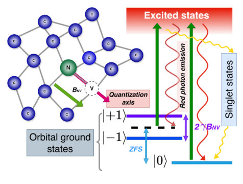
<figcaption class="paper-figure-caption"><b>Fig 1.</b> Fig. 1: Level diagram of a nitrogen-vacancy center in diamond, where a substitutional nitrogen atom and an adjacent vacancy form a spin defect used for nanoscale magnetometry. Without any external magnetic field, the energies of the orbital ground states, ∈{|0⟩, |±1⟩}, split, called zero field splitting (ZFS). In the presence of an external magnetic field, BNV along the quantization axis of the crystal, the degenerate ground states, |+1⟩and |−1⟩, split up, which is referred to as Zeeman splitting. Once optically excited, the |±1⟩states decay through metastable singlet states to the ground state, |0⟩, leading to optical initialization and spin-dependent fluorescence to be read optically to...</figcaption>
</figure>
<figure class="paper-figure-card">
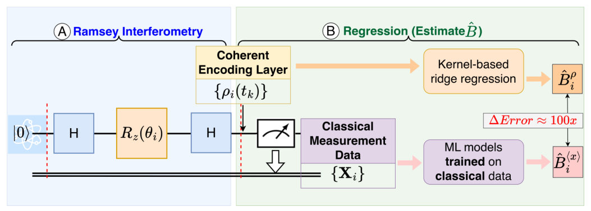
<figcaption class="paper-figure-caption"><b>Fig 2.</b> Fig. 2: Magnetic field estimation using NV center-inspired quantum sensing simulation. (A) Ramsey Interferometry simulation: θi = γBitk; ρi(tk) is the corresponding density matrix, after the system evolves under a magnetic field Bi for time tk; xi is the corresponding expectation value of the observable. (B) Regression problem to estimate the unknown magnetic field: ˆBρ and ˆB⟨x⟩are the estimated magnetic field values based on coherent-state and classical measurement statistics, respectively.</figcaption>
</figure>
<figure class="paper-figure-card">
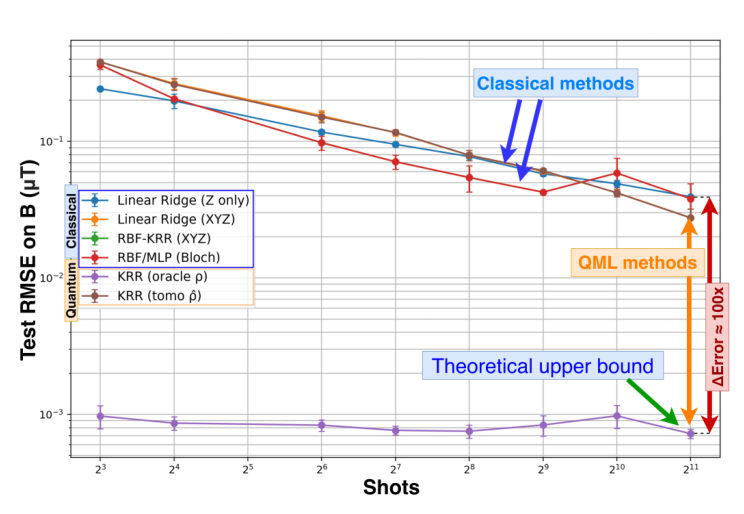
<figcaption class="paper-figure-caption"><b>Fig 3.</b> Fig. 3: NV center-inspired magnetometry regression (mean ± std over seeds): Depicts the theoretical upper bound, and its performance gap with the models learning from the measurement data. The estimation error in the latter is 100 times more. Sensing pipelines that are more closely integrated with the coherent quantum states, or a more sophisticated measurement strategy, can help to close this gap and provide more accurate results.</figcaption>
</figure>
<figure class="paper-figure-card">
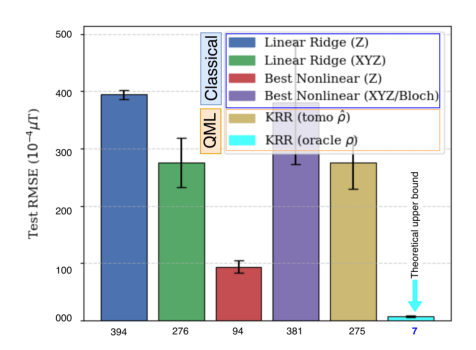
<figcaption class="paper-figure-caption"><b>Fig 4.</b> Fig. 4: Test RMSE (µT) at 2048 shots (mean ± std): The RMSE is significantly lower in the theoretical upper bound, which highlights its gap with the measurement-based learning models.</figcaption>
</figure>
</div>

<p><strong>Summary.</strong> This work investigates how Quantum Machine Learning (QML) can enhance magnetic field sensing using NV centers, focusing on the impact of measurement noise. By comparing models trained on raw measurement data versus those using pre-measurement quantum states, the authors show that access to quantum coherence provides a substantial, theoretically achievable performance boost. This underscores the need for quantum-native learning pipelines to minimize information loss in real-world quantum sensors.</p>
<p><strong>Why it may be interesting.</strong> It provides a concrete, quantitative framework for understanding the limitations imposed by measurement back-action on quantum sensing protocols, which is crucial for designing fault-tolerant quantum measurements.</p>
<details>
<summary>Detailed structure</summary>
<p><strong>Main problem.</strong> The paper addresses the challenge of extracting reliable parameters from noisy, measurement-limited quantum sensing data in the NISQ era.</p>
<p><strong>Main result.</strong> QML-based sensing performance significantly improves when utilizing pre-measurement coherent quantum-state information, demonstrating that measurement-induced information loss is the primary bottleneck.</p>
<p><strong>Method.</strong> The authors formulated magnetic field estimation as a supervised regression task, comparing classical ML models trained on measurement statistics against quantum kernel models trained on coherent quantum states.</p>
<p><strong>Model / system.</strong> The study uses a Nitrogen-vacancy (NV) center in diamond as a quantum sensor, simulating Ramsey interferometry governed by a Zeeman Hamiltonian. The process involves unitary evolution followed by projective measurement.</p>
<p><strong>Key observables.</strong> Magnetic field ($B$), estimation error (RMSE), and the comparison between classical vs. quantum kernel model performance.</p>
<p><strong>Important parameters / regimes.</strong> Magnetic field range ($B \in [0, 2] \mu T$), evolution times ($\{5, 10, 20, 40, 60\} \mu s$), and noise parameters like $T_2$ and readout error.</p>
<p><strong>Assumptions / limitations.</strong> The core comparison assumes that classical models are limited by measurement statistics, while quantum models can access the theoretical upper bound provided by coherent states.</p>
<p><strong>Figures summary.</strong> Figures illustrate the NV center level diagram, the Ramsey interferometry setup, and comparative plots showing the gap between the theoretical upper bound (coherent state access) and measurement-limited model performance.</p>
<p><strong>Paper structure.</strong> The paper establishes the sensing problem using NV centers, details the data acquisition by comparing classical (measurement-based) and quantum (coherent state) data types, and concludes by quantifying the performance gap attributable to measurement-induced information loss.</p>
</details>
<details>
<summary>Abstract</summary>
<p>Nitrogen-vacancy (NV) centers in diamond can serve as highly sensitive solid-state quantum sensors for high-sensitivity magnetometry. However, in the noisy intermediate-scale quantum (NISQ) era, extracting reliable information from noisy, finite-shot, and measurement-limited sensing data remains a considerable challenge. Whereas, quantum machine learning (QML) offers a potential path to improve parameter estimation by learning nonlinear relationships between quantum-sensing data and the underlying physical signal. In this work, we investigate the role of QML in magnetic-field estimation within an NV center-inspired magnetometry setting. We formulated magnetic field sensing as a supervised regression task. We compared the performance of several classical machine learning models trained on measurement-based classical data with that of quantum kernel-based models trained on pre-measurement coherent quantum states. Our objective is to isolate the impact of measurement-induced information loss and therefore provide a theoretical upper bound on the sensing performance. The upper bound is achievable only when coherent quantum information is directly available to the learning model. Our results show that QML-based sensing performance improves significantly with coherent quantum-state information, and not much with changes in model complexity or learning paradigm. This observation underscores the importance of learning pipelines that tightly integrate quantum sensors and QML models to enhance magnetic field sensing under realistic constraints.</p>
</details>
<p><sub><a href="#top">↑ back to top</a></sub></p>

<p><a id="paper-2608.24502"></a></p>
<h3 id="quantum-simulation-of-circular-cluster-interactions-in-a-linear-spin-chain"><a href="http://arxiv.org/abs/2608.24502v1">Quantum simulation of circular cluster interactions in a linear spin chain</a></h3>
<p><strong>Authors:</strong> Alexander van Lomwel, Hongzheng Zhao, Florian Mintert<br>
<strong>Type:</strong> theory · <strong>Category:</strong> other · <strong>PDF:</strong> <a href="https://arxiv.org/pdf/2608.24502v1">https://arxiv.org/pdf/2608.24502v1</a><br>
<strong>Analysis basis:</strong> full PDF text, analyzed in chunks
<strong>Topic relevance:</strong> 🔥 <code>analog quantum simulation</code> <strong>4/5</strong> · <code>quantum measurements</code> <strong>2/5</strong> · <code>methods for driven-dissipative</code> <strong>1/5</strong></p>
<div class="figure-strip-hint">↔ Scroll figures horizontally</div>
<div class="paper-figures-scroll">
<figure class="paper-figure-card">
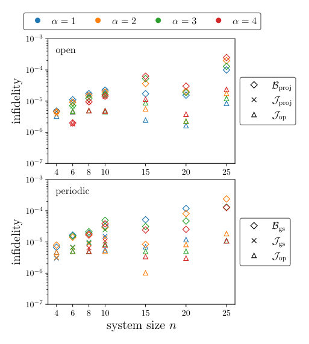
<figcaption class="paper-figure-caption"><b>Fig 1.</b> FIG. 1. Infidelities as functions of system size n for ground state preparation of the OBC target KT = Kα n−α (top panel; Eq. (4)) and the PBC target KT = Kα n (bottom panel; Eq. (6)), for cluster interaction ranges α ∈[1, 4]. Triangles show the operator infidelity Jop = J (K(T), KT) (Eq. (A10)). Crosses show the infidelity between the projectors onto the ground spaces of K(T) and KT, Jproj (Eq. (A13)), in the de- generate OBC case, and the infidelity between the ground states of K(T) and KT, Jgs (Eq. (A11)), in the non- degenerate PBC case, while diamonds show their respective upper bounds, Bproj (Eq. (A14)) and Bgs (Eq. (A12)). With a typical operator infidelity of O(10−5), the bound...</figcaption>
</figure>
<figure class="paper-figure-card">
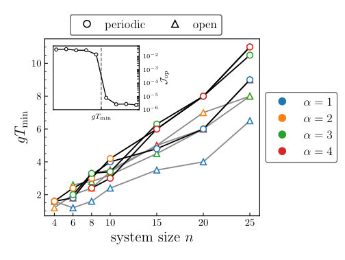
<figcaption class="paper-figure-caption"><b>Fig 2.</b> FIG. 2. The minimum required duration gTmin, in terms of the interaction strength g of the system Hamiltonian Eq. (2), as a function of system size n. The triangle points represent target KT = Kα n−α (Eq. (4)) (OBC), and the circle points represent target KT = Kα n (Eq. (6)) (PBC), for cluster in- teraction ranges α ∈[1, 4]. The minimum duration appears to scale approximately linear with the system size and, for a given system size, the minimum duration does not vary considerably with the cluster interaction range α. While the minimum duration does increase for the PBC target Hamil- tonian, the duration is still comparable to that of the OBC target Hamiltonian. The top left inset shows an...</figcaption>
</figure>
<figure class="paper-figure-card">

<figcaption class="paper-figure-caption"><b>Fig 3.</b> Fig. 2 also shows gTmin as a function of system size n for both the OBC target with points depicted by trian- gles, and the PBC target with points depicted by circles, for cluster interaction ranges α ∈[1, 4]. Despite the lim- ited reliability of numerical optimization, a linear growth of gTmin with system size n is rather evident for both the open and periodic case, as well as the observation that gTmin does not vary considerably with the cluster inter- action range α. This scaling is remarkably weak, only requiring a small percentage of the full coherence bud- get of modern quantum simulators [62] at large system sizes, such as n = 25. While the minimum duration gTmin in order to realize...</figcaption>
</figure>
</div>

<p><strong>Summary.</strong> This paper tackles the challenge of engineering complex quantum Hamiltonians, such as those exhibiting periodic boundary conditions, using a physical device naturally constrained to open boundary conditions. The authors develop a quantum control protocol that drives the system Hamiltonian towards the target Hamiltonian by minimizing infidelity. They show that this process is highly efficient, requiring only a modest, near-linear scaling of control time with system size.</p>
<p><strong>Why it may be interesting.</strong> This work provides a concrete, scalable protocol for realizing complex, symmetry-enforced Hamiltonians (like those found in quantum simulation of correlated materials) using only local, controllable interactions, which is highly relevant for designing quantum simulators.</p>
<details>
<summary>Detailed structure</summary>
<p><strong>Main problem.</strong> The central challenge is preparing ground states of Hamiltonians with symmetries fundamentally different from those of the underlying physical device, specifically achieving periodic boundary conditions (PBC) interactions on a linear geometry with open boundary conditions (OBC).</p>
<p><strong>Main result.</strong> The authors demonstrate that this goal can be achieved using an analog protocol whose required control duration scales only moderately (near-linearly) with the system size, even for complex PBC targets.</p>
<p><strong>Method.</strong> They employ time-dependent quantum control theory, designing the evolution of a system Hamiltonian $H(t)$ to map an initial state to the target ground state by minimizing operator and ground state infidelities.</p>
<p><strong>Model / system.</strong> The system is a linear spin chain modeled by spin operators ($X_j, Y_j, Z_j$). The Hamiltonians involve nearest-neighbor interactions and target cluster interactions, which are analyzed within the framework of a Lie algebra.</p>
<p><strong>Key observables.</strong> Operator infidelity ($J_{op}$), projector infidelity ($J_{proj}$), and ground state infidelity ($J_{gs}$), as well as the minimum required control duration ($gT_{min}$).</p>
<p><strong>Important parameters / regimes.</strong> System size ($n$), interaction range ($\alpha$), and the control duration ($T$).</p>
<p><strong>Assumptions / limitations.</strong> The analysis relies on the fact that the initial Hamiltonian has product state eigenstates, and the Lie algebra generated by the system operators is polynomially scaling.</p>
<p><strong>Figures summary.</strong> Figures illustrate the scaling of operator and ground state infidelities, as well as the minimum required control duration, showing weak dependence on the interaction range $\alpha$ for both OBC and PBC cases.</p>
<p><strong>Paper structure.</strong> The paper first establishes the physical problem of symmetry mismatch between target and device Hamiltonians. It then analyzes the structure of the relevant Lie algebra. Finally, it develops and applies the quantum control protocol, calculating infidelities and determining the scaling of the required control time for both OBC and PBC targets.</p>
</details>
<details>
<summary>Abstract</summary>
<p>The preparation of ground states of Hamiltonians with symmetries that are fundamentally different than those of the underlying device is a central challenge for quantum technologies. Here, we address this challenge with an analog protocol for the iconic generalized cluster Hamiltonian with the translational symmetry resultant from periodic boundary conditions based on a magnetization-preserving interaction on a linear geometry with open boundary conditions. Our results show that this goal can be achieved in a control duration that scales only moderately with the number of spins and Hamiltonian interaction complexity.</p>
</details>
<p><sub><a href="#top">↑ back to top</a></sub></p>

<p><a id="paper-2608.23681"></a></p>
<h3 id="bang-bang-protocol-for-nondispersive-qubit-readout"><a href="http://arxiv.org/abs/2608.23681v1">Bang-bang protocol for nondispersive qubit readout</a></h3>
<p><strong>Authors:</strong> Nina del Ser, Yinan Chen, Jacob Steiner, Gil Refael<br>
<strong>Type:</strong> theory · <strong>Category:</strong> quantum information and computing · <strong>PDF:</strong> <a href="https://arxiv.org/pdf/2608.23681v1">https://arxiv.org/pdf/2608.23681v1</a><br>
<strong>Analysis basis:</strong> full PDF text, analyzed in chunks
<strong>Topic relevance:</strong> 🔥 <code>quantum measurements</code> <strong>4/5</strong> · <code>QC/QI experiment</code> <strong>2/5</strong></p>
<div class="figure-strip-hint">↔ Scroll figures horizontally</div>
<div class="paper-figures-scroll">
<figure class="paper-figure-card">
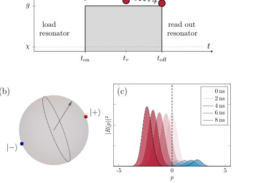
<figcaption class="paper-figure-caption"><b>Fig 1.</b> FIG. 1. (a) Schematic of the bang-bang nondispersive readout protocol. (b) Bloch sphere representation of the |±⟩sweet- spot basis states of a qubit in the nondispersive JC model, Eq. (1). |±⟩are related to the Sz-eigenstates |↑, ↓⟩by Eq. (7), with θR →θJC, ϕR →ϕJC. (c) Probability distribution of the resonator quantum state projected onto the p-coordinate. At the readout time tr ≈7 ns, the distributions corresponding to |+⟩(red) and |−⟩(blue) become distinguishable. Parameters used in panels (b)–(c): g/2π =100 MHz, ∆/2π =23 MHz, and N = |α0|2 = 9.</figcaption>
</figure>
<figure class="paper-figure-card">

<figcaption class="paper-figure-caption"><b>Fig 2.</b> FIG. 2. Time traces for 0 ≤t ≤20 TR/JC, with TR/JC = 2π/ΩR/JC, of the resonator static/dynamic drive vector (red) and qubit Bloch vector (blue) in the Rabi (panels (a)–(c)) and JC (panels (d)–(f)) models, in the rotating frame described by the unitary operators ˆUJC(t), ˆURabi(t) defined in Eq. (5). The qubit is initialized in the |±⟩eigenstates, i.e. parallel or antiparallel to the Rabi vector, in columns 1–2, and in an (unequal) superposition state of |±⟩in column 3. In the Rabi model, ⟨ˆS⟩always precesses anticlockwise at the Rabi frequency ΩR around ΩR, which is fixed [Eq. (8) and (11)]. In the JC model, ˆΩR is promoted to an operator and becomes dynamical [Eq. (13)]. Rabi oscillations...</figcaption>
</figure>
<figure class="paper-figure-card">

<figcaption class="paper-figure-caption"><b>Fig 3.</b> FIG. 3. Panels (a)–(b): paths of ⟨ˆS⟩and ⟨ˆΩJC⟩projected onto the SxSy- and xp-planes, respectively, for initial qubit states |±⟩(red/blue), |s⟩= 1 √</figcaption>
</figure>
<figure class="paper-figure-card">

<figcaption class="paper-figure-caption"><b>Fig 4.</b> FIG. 4. Qubit angles in the early-time window, 0 &lt; t ≲tr, for a qubit initialized in |±⟩(JC model in the rotating frame, as in Fig. 2 and 3). We plot cos(Θ) and ˙Φ for simplicity, where Θ, Φ are the polar and azimuthal angles of the qubit, respectively. Saddlepoint (SP) and semiclassical (SC) expressions for Θ, Φ were obtained by substituting Eq. (D1) and (D2) and Eq. (15) into Eq. (61), respectively. Only the SP approach is able to correctly capture the initial O(N −1) oscillations in the exact data for 0 &lt; t ≲tr. At t ≳tr, the exact data, SP and SC approaches match to leading order in 1/ √</figcaption>
</figure>
<figure class="paper-figure-card">

<figcaption class="paper-figure-caption"><b>Fig 5.</b> FIG. 5. Loss in qubit purity, 1 −Tr  ˆρq(tr)2 , at readout time tr =7 ns, for a qubit initialized in sweet-spot states |±⟩ (r = ±1), as a function of N. Dashed lines correspond to the asymptotic 1/(4N) line (brown), with a 1/(4 √</figcaption>
</figure>
</div>

<p><strong>Summary.</strong> This paper introduces a 'bang-bang' protocol to achieve fast, high-fidelity, and quantum-non-demolition (QND) readout for superconducting qubits. By replacing slow parameter sweeps with sudden coupling quenches, the protocol maintains high measurement fidelity even in the nondispersive regime. The theoretical analysis confirms that the error in both fidelity and QNDness scales favorably as $1/N$, making it a robust method for quantum information processing.</p>
<p><strong>Why it may be interesting.</strong> This work provides a concrete, theoretically derived protocol for high-fidelity quantum measurement in superconducting circuits, directly impacting the feasibility of scalable quantum computation by improving readout fidelity.</p>
<details>
<summary>Detailed structure</summary>
<p><strong>Main problem.</strong> The paper addresses the need for fast, precise, and quantum-non-demolition (QND) readout of superconducting qubits, overcoming limitations found in conventional dispersive readout methods.</p>
<p><strong>Main result.</strong> A novel 'bang-bang' readout protocol, which uses sudden quenches of the coupling constant, achieves single-shot projective measurements with remarkably high fidelity and QNDness, with errors decreasing as $1/N$.</p>
<p><strong>Method.</strong> The authors developed an analytical theory for the Jaynes-Cummings model dynamics, employing a saddle-point approximation and a systematic asymptotic expansion in powers of $1/\sqrt{N}$.</p>
<p><strong>Model / system.</strong> The system involves superconducting qubits coupled to a harmonic readout resonator, modeled by the Jaynes-Cummings (JC) Hamiltonian. The protocol is tested in both the dispersive and nondispersive regimes.</p>
<p><strong>Key observables.</strong> Fidelity, QNDness, qubit purity, and the resonator state distribution after measurement.</p>
<p><strong>Important parameters / regimes.</strong> Photon number ($N$), coupling constant ($g$), detuning ($\Delta$), and the quench timing/protocol parameters.</p>
<p><strong>Assumptions / limitations.</strong> The analysis relies on the JC model, assumes large photon numbers ($N \gtrsim 1$), and requires initializing the qubit in a specific 'sweet-spot basis' for optimal performance.</p>
<p><strong>Figures summary.</strong> Figure 1 schematically illustrates the bang-bang protocol, the sweet-spot basis on the Bloch sphere, and the distinguishable resonator state distribution at readout. Other figures show time traces of Bloch vectors and fidelity/QNDness errors vs. protocol parameters.</p>
<p><strong>Paper structure.</strong> The paper first establishes the problem with conventional readout, then introduces the bang-bang protocol. The core is the theoretical development using the JC model, followed by detailed calculations of fidelity and QNDness errors in the large $N$ limit, comparing results for different drive models.</p>
</details>
<details>
<summary>Abstract</summary>
<p>Fast, precise, and quantum-non-demolition (QND) readout of superconducting qubits is a fundamental component of high-fidelity quantum sensing and computation. Conventional approaches typically operate in the dispersive regime, where the qubit-resonator coupling $g$ is weak compared to the detuning $Δ$. While exhibiting good QND properties, the readout rate is limited to $\sim g^2\sqrt{N}/Δ\ll g$, where $N$ is the number of photons in the resonator. QND readout in the nondispersive regime, where the readout rate reaches its full potential $\sim g$, relies on parameter sweeps that may encounter resonances, leading to measurement-induced state transitions (MIST). In this work, we study a nondispersive readout protocol that replaces these sweeps by sudden quenches of the coupling constant, using a resonator that is preloaded with photons. We call this protocol bang-bang readout, and show that it realizes single-shot projective measurements. The fidelity and QNDness of the qubit post-measurement are remarkably high, with an error that decreases like $1/N$. To arrive at these findings, we develop an analytical theory for the dynamics and measurements of the Jaynes-Cummings (JC) model, including a systematic expansion of correction terms in powers of $1/\sqrt{N}$. We show that the protocol can also be implemented without preloading the resonator by instead strongly driving the qubit, e.g., with a classical flux drive.</p>
</details>
<p><sub><a href="#top">↑ back to top</a></sub></p>

<p><a id="paper-2608.24084"></a></p>
<h3 id="lifting-connectivity-bottlenecks-in-superconducting-quantum-processors-via-enriched-native-two-qubit-gates"><a href="http://arxiv.org/abs/2608.24084v1">Lifting connectivity bottlenecks in superconducting quantum processors via enriched native two-qubit gates</a></h3>
<p><strong>Authors:</strong> Hanyi Wang, Jingzhe Guo, Lijun Sun, Zhaohui Yang, Weizhi Tao, Xingye Yuan, Qiankun Wang, Bihao Guo, Chunwang Liu, Rui Yang, Yang Li, Yu Fan, Jiasheng Hu, Junhe Wang, Shuyue Zheng, Shengbin Wang, Xinfang Zhang, Feng Wu, Hantao Sun, Jianxin Chen<br>
<strong>Type:</strong> both · <strong>Category:</strong> quantum information and computing · <strong>PDF:</strong> <a href="https://arxiv.org/pdf/2608.24084v1">https://arxiv.org/pdf/2608.24084v1</a><br>
<strong>Analysis basis:</strong> full PDF text, analyzed in chunks
<strong>Topic relevance:</strong> 🔥 <code>QC/QI experiment</code> <strong>4/5</strong></p>
<div class="figure-strip-hint">↔ Scroll figures horizontally</div>
<div class="paper-figures-scroll">
<figure class="paper-figure-card">

<figcaption class="paper-figure-caption"><b>Fig 1.</b> FIG. 1: (a) Topological layout of qubits and couplers. Dark gray denotes qubits, and light blue denotes couplers. (b) Simplified circuit schematic of two qubits coupled via a tunable coupler. (c) Compiled pulse sequence for an arbitrary AshN two-qubit gate. From top to bottom: Z-control pulses on the two qubits, the Z-control pulse on the tunable coupler, and the XY-drive pulses applied to the two qubits. (d) The AshN gate reduces routing overhead via SWAP absorption. The left panel shows a three-qubit 1D chain topology (q0 ↔q1 ↔q2). The middle panel illustrates that, under a trivial initial mapping, gate g3 in the logical circuit is not directly executable. The right panel shows that a...</figcaption>
</figure>
<figure class="paper-figure-card">

<figcaption class="paper-figure-caption"><b>Fig 2.</b> FIG. 2: AshN gate performance of the system. (a) Illustration of the AshN two-qubit gate in the Weyl chamber calibrated in this work. Under the KAK decomposition, every two-qubit operation in SU(4) is locally equivalent to a point in the Weyl chamber. (b) Cross-entropy benchmarking (XEB) results for different types of AshN two-qubit gates. Here, “cycles” denotes the number of layers in the random circuits, and Alpha represents the XEB fidelity extracted from the cross-entropy between the experimental and ideal probability distributions. Each panel corresponds to a different type of AshN two-qubit gate; the annotations indicate the gate type, the extracted XEB fidelity, and the corresponding...</figcaption>
</figure>
<figure class="paper-figure-card">

<figcaption class="paper-figure-caption"><b>Fig 3.</b> FIG. 3: Comparison between CZ- and AshN-based two-qubit gate schemes. (a) Representative benchmark circuit compiled using the AshN- and CZ-based frameworks. The upper panel shows the AshN implementation, consisting of native AshN two-qubit gates and single-qubit gates, while the lower panel shows the corresponding CZ-based implementation composed of CZ and single-qubit gates. The circuit shown is one of the seven benchmark circuits used in the experiments. (b) Comparison of compiled two-qubit gate counts and circuit fidelities for the AshN- and CZ-based compilation schemes. The left panel compares the compiled two-qubit gate counts for the seven benchmark circuits using the AshN and CZ gate...</figcaption>
</figure>
<figure class="paper-figure-card">

<figcaption class="paper-figure-caption"><b>Fig 4.</b> FIG. 4: (a) Schematic of the qubit topologies used in this work. From top to bottom: the defect-free 2×4 topology, the corresponding Defect247 configuration, the defect-free 3×3 topology, and the corresponding Defect45 configuration. (b) Full quantum state tomography (QST) of the Dicke state prepared on the defect-free 2×4 topology using the AshN scheme, reconstructed in the computational basis. The ideal two-excitation Dicke state has support over 28 computational-basis states with equal probability 1/28, and the reconstructed state achieves a fidelity of F = 0.736 ± 0.001 with the ideal Dicke state. Bar height and color represent the magnitude of the reconstructed density-matrix element...</figcaption>
</figure>
</div>

<p><strong>Summary.</strong> This paper introduces the AshN control scheme to overcome connectivity limitations in superconducting quantum processors. By engineering native two-qubit gates, the scheme allows complex logical operations and necessary qubit routing to be merged into single physical operations. This results in substantial reductions in gate count and demonstrates robust entanglement preparation even on hardware with connectivity defects.</p>
<p><strong>Why it may be interesting.</strong> This work directly tackles hardware limitations in superconducting quantum computing, providing a practical, gate-level engineering solution (native-gate engineering) that improves resource efficiency and scalability for quantum algorithms.</p>
<details>
<summary>Detailed structure</summary>
<p><strong>Main problem.</strong> The primary challenge addressed is the connectivity bottleneck in superconducting quantum processors, where planar layouts restrict interactions between distant qubits.</p>
<p><strong>Main result.</strong> The proposed AshN control scheme effectively merges logical interactions and required qubit routing into single native operations, achieving significant reductions in two-qubit gate counts compared to standard CZ-based compilation.</p>
<p><strong>Method.</strong> The authors use the AshN control scheme, which leverages rich two-qubit control on nearest-neighbor pairs to implement SWAP absorption, effectively transforming sparse hardware graphs into more connected computational architectures.</p>
<p><strong>Model / system.</strong> The work focuses on superconducting quantum processors with nearest-neighbor coupling graphs. The methodology involves gate synthesis using the AshN protocol and optimization via a router called MirrorSABRE.</p>
<p><strong>Key observables.</strong> Two-qubit gate count (showing reductions of 43-45% vs. CZ), state fidelity (e.g., 0.736 for Dicke state), and certification of genuine multipartite entanglement using a PPT witness.</p>
<p><strong>Important parameters / regimes.</strong> The comparison is made across 1D and 2D lattice topologies, including testing robustness against up to three connectivity defects.</p>
<p><strong>Assumptions / limitations.</strong> The process assumes the ability to calibrate the gate set against device imperfections, though the benefit of SWAP absorption is noted to be workload-dependent.</p>
<p><strong>Figures summary.</strong> Figures illustrate the topological layout, the mechanism of SWAP absorption using AshN gates, and comparisons of gate counts and entanglement certification between AshN and CZ gate sets on various lattices.</p>
<p><strong>Paper structure.</strong> The paper introduces the connectivity problem, details the AshN control scheme and its implementation (including the MirrorSABRE router), presents quantitative benchmarks showing gate count reduction, and validates the approach by preparing and certifying entanglement in multi-qubit states on defective lattices.</p>
</details>
<details>
<summary>Abstract</summary>
<p>Limited qubit connectivity is a central architectural constraint in superconducting quantum processors, whose planar layouts require additional gates to mediate interactions between distant qubits. Here, we use the AshN control scheme, where rich two-qubit control on every nearest-neighbour pair allows a logical interaction and the required qubit routing to be merged into a single native operation, effectively transforming a sparse hardware graph into a more connected computational architecture. For the benchmark instances studied, the resulting synthesis capability enables reliable execution on constrained one- and two-dimensional lattices, with compiled two-qubit gate counts approaching those of an all-to-all-connected reference. Across seven benchmark circuits on one- and two-dimensional topologies, the AshN-based implementation achieves geometric-mean reductions of $45.2\%$ and $43.7\%$ in two-qubit gate count compared with controlled-Z-based compilation, respectively. Using AshN gates, we prepare an eight-qubit two-excitation Dicke state with a fidelity of $0.736$ and certify its genuine multipartite entanglement using a fully positive-partial-transpose witness, whereas the same witness does not certify entanglement for the CZ-based implementation. The state fidelity and entanglement certification remain robust across the tested lattice configurations, including those with up to three connectivity defects. Our work establishes native-gate engineering as a practical approach to mitigating connectivity constraints.</p>
</details>
<p><sub><a href="#top">↑ back to top</a></sub></p>

<p><a id="paper-2608.24543"></a></p>
<h3 id="quantum-change-intervals-exact-asymptotic-localization-with-collective-measurements"><a href="http://arxiv.org/abs/2608.24543v1">Quantum Change Intervals: Exact Asymptotic Localization with Collective Measurements</a></h3>
<p><strong>Authors:</strong> Xu Chen, Xue Ma<br>
<strong>Type:</strong> theory · <strong>Category:</strong> other · <strong>PDF:</strong> <a href="https://arxiv.org/pdf/2608.24543v1">https://arxiv.org/pdf/2608.24543v1</a><br>
<strong>Analysis basis:</strong> full PDF text, analyzed in chunks
<strong>Topic relevance:</strong> 🔥 <code>quantum measurements</code> <strong>4/5</strong></p>
<div class="figure-strip-hint">↔ Scroll figures horizontally</div>
<div class="paper-figures-scroll">
<figure class="paper-figure-card">

<figcaption class="paper-figure-caption"><b>Fig 1.</b> Figure 1: Returning quantum change interval and collective localization. A source emits the reference state |0⟩except on a nonempty contiguous interval I = [a, b], where it emits the known anomalous state |ψ⟩. The entry and return boundaries are a and b + 1, respectively. For known length, i = b −a + 1 is fixed and only a is inferred; for unknown length, both endpoints are inferred. An arbitrary collective POVM may act on all n systems and returns an exact interval estimate bI. The state overlap is c = |⟨0|ψ⟩|; for 0 &lt; c &lt; 1, the local states are nonorthogonal.</figcaption>
</figure>
<figure class="paper-figure-card">

<figcaption class="paper-figure-caption"><b>Fig 2.</b> Figure 2: Hierarchy of analytic localization limits. (a) The fixed-length Toeplitz integral P∞(i, c2) approaches the long- known-interval law p1(c2) as i grows. The i = 2 curve is equivalently given by the complete-elliptic-integral expression in Corollary 3.4. (b) The one-translation law p1(c2) and two-endpoint law p1(c)2 are shown for their respective uniform- translation and uniform-interval priors. The latter follows from the two-dimensional Følner limit and separable comparison symbol.</figcaption>
</figure>
<figure class="paper-figure-card">

<figcaption class="paper-figure-caption"><b>Fig 3.</b> Figure 3: Finite-size convergence and safeguarded floating-point SRM-gap brackets. (a) SRM success for i = ⌈ √</figcaption>
</figure>
</div>

<p><strong>Summary.</strong> This theoretical paper derives the asymptotic optimal success probabilities for detecting a localized, transient quantum change in a stationary quantum signal. It rigorously compares the theoretical optimum with the Square-Root Measurement (SRM) limit under various prior assumptions regarding the unknown interval length. The results provide precise mathematical benchmarks for quantum change detection protocols.</p>
<p><strong>Why it may be interesting.</strong> The rigorous mathematical framework for determining optimal detection strategies in quantum signal processing, especially the comparison between theoretical optima and practical measurements like SRM, is highly relevant to quantum sensing and quantum information theory.</p>
<details>
<summary>Detailed structure</summary>
<p><strong>Main problem.</strong> The paper addresses the minimum-error localization of a transient, pure-state change occurring over a contiguous interval within an otherwise stationary quantum signal.</p>
<p><strong>Main result.</strong> The asymptotic optimal and Square-Root Measurement (SRM) success probabilities converge to specific one-dimensional Toeplitz functionals, depending on whether the interval length is fixed or unknown.</p>
<p><strong>Method.</strong> The analysis employs advanced mathematical techniques, including Toeplitz symbol analysis, Følner reduction, and the exceptional-sector Gram transfer theorem to establish asymptotic limits.</p>
<p><strong>Model / system.</strong> The model involves a sequence of independent quantum outputs that are perturbed by a pure-state change $|\psi
angle$ localized to a specific interval $I$, compared against a reference state $|0
angle$.</p>
<p><strong>Key observables.</strong> Minimum-error optimal success probability ($P_{	ext{opt}}$) and the Square-Root Measurement (SRM) success probability.</p>
<p><strong>Important parameters / regimes.</strong> The state overlap $c = |\langle 0|\psi
angle|$, the interval length $i$, and the total sequence length $n$.</p>
<p><strong>Assumptions / limitations.</strong> The analysis assumes independent outputs, an abrupt change, and the use of a zero-one reward criterion for minimum-error detection.</p>
<p><strong>Figures summary.</strong> Figures illustrate the geometry of the quantum change interval and show numerical comparisons of SRM success probabilities for known and unknown growing lengths.</p>
<p><strong>Paper structure.</strong> The paper progresses by first establishing the problem setup, then deriving asymptotic limits for fixed interval lengths, extending these results to the case where both interval length and number of translations diverge, and finally incorporating a no-change hypothesis via Bayes optimization.</p>
</details>
<details>
<summary>Abstract</summary>
<p>We study exact-label minimum-error localization of a transient, calibrated pure-state change occupying one nonempty contiguous interval in an otherwise stationary sequence of independent outputs, allowing arbitrary collective measurements. Let $c=|\langle 0|ψ\rangle|$ be fixed as the sequence length grows. For each fixed known interval length $i$, as the number $N$ of admissible translations tends to infinity, the corresponding Toeplitz symbol yields an exact square-root integral for the asymptotic optimal success probability, and the square-root measurement (SRM) attains the same limit. If the known length $i_n$ and $N_n=n-i_n+1$ both diverge, with no restriction on their ratio, the optimal and SRM success probabilities converge to the one-dimensional Toeplitz functional at the effective compound overlap $c^2$, namely $p_1(c^2)$. Under a uniform prior over all nonempty intervals, the unknown-length physical Gram kernel is not globally two-dimensional Toeplitz because of gap-dependent corrections. A triangular Følner reduction and an exceptional-sector Gram transfer theorem extend the comparison-kernel limits to the optimal and SRM success probabilities of the full physical ensemble, yielding $p_1(c)^2$. After adding a no-change hypothesis with fixed prior $π_0$, while retaining the uniform conditional distribution over anomalous intervals, the optimal joint Bayes limit is $π_0+(1-π_0)L$, where $L$ is the corresponding conditional localization limit; the weighted SRM for the augmented ensemble is not analyzed. Finite-size semidefinite programs and full dense physical-Gram SRM computations illustrate the asymptotic results.</p>
</details>
<p><sub><a href="#top">↑ back to top</a></sub></p>

<p><a id="paper-2608.24013"></a></p>
<h3 id="quantum-geometry-stabilization-of-dilute-fractional-chern-insulators"><a href="http://arxiv.org/abs/2608.24013v1">Quantum-geometry stabilization of dilute fractional Chern insulators</a></h3>
<p><strong>Authors:</strong> Ying-Xing Ding, Li-Min Zhang, Wen-Tong Li, D. L. Zhou, Wu-Ming Liu<br>
<strong>Type:</strong> theory · <strong>Category:</strong> strongly correlated electrons · <strong>PDF:</strong> <a href="https://arxiv.org/pdf/2608.24013v1">https://arxiv.org/pdf/2608.24013v1</a><br>
<strong>Analysis basis:</strong> full PDF text, analyzed in chunks
<strong>Topic relevance:</strong> 🔥 <code>analog quantum simulation</code> <strong>4/5</strong></p>
<div class="figure-strip-hint">↔ Scroll figures horizontally</div>
<div class="paper-figures-scroll">
<figure class="paper-figure-card">

<figcaption class="paper-figure-caption"><b>Fig 1.</b> FIG. 1. Center-decorated kagome lattice and single-particle band geometry. (a) Lattice structure and hopping pattern. (b) Brillouin zone. (c) Representative flat lowest band with Chern number C = 1 along the high-symmetry path, evalu- ated at t1 = 1, t2 = −1/3, t3 = 1/3, and ϕ ≈0.8π. (d)- (f) Berry curvature, trace of the quantum metric, and trace- condition deviation ∆(k) = Tr g(k) −|Ω(k)|.</figcaption>
</figure>
<figure class="paper-figure-card">

<figcaption class="paper-figure-caption"><b>Fig 2.</b> FIG. 2. Optimization with respect to the center-site hop- ping t2 between the added D site and the kagome backbone. (a) Maximum trace-condition deviation ∆max. (b) Minimum many-body gap and (c) gap-to-splitting ratio over the twist- angle torus for ν = 1/3 and ν = 1/5. The shaded re- gion marks the stability-enhanced, geometry-improved win- dow, and the vertical black dashed line indicates t2 = −1/3, t2 = −0.35 is used below as a representative point.</figcaption>
</figure>
<figure class="paper-figure-card">

<figcaption class="paper-figure-caption"><b>Fig 3.</b> FIG. 3. Low-energy spectra, finite-size scaling, and spectral flow at the optimized parameter. Panels (a)–(c) show results for ν = 1/3, and panels (d)–(f) show results for ν = 1/5: (a),(d) low-energy spectra, (b),(e) finite-size trends of the ground-state splitting and excitation gap, and (c),(f) spectral flow under flux insertion. The quasi-degenerate ground-state manifolds remain separated from higher excitations and re- turn to themselves under flux insertion.</figcaption>
</figure>
<figure class="paper-figure-card">

<figcaption class="paper-figure-caption"><b>Fig 4.</b> FIG. 4. Quasihole spectra, particle entanglement spectra, and static structure factors at the optimized parameter. Pan- els (a)–(c) correspond to ν = 1/3, and panels (d)–(f) corre- spond to ν = 1/5: (a),(d) quasihole spectra, (b),(e) parti- cle entanglement spectra, and (c),(f) static structure factors S(q). The counting agrees with Abelian Laughlin FCIs, while S(q) shows no sharp ordering peak.</figcaption>
</figure>
</div>

<p><strong>Summary.</strong> This paper proposes that the stability of dilute fractional Chern insulators can be enhanced not just by achieving band flatness, but by engineering the quantum geometry of the underlying electronic band structure. By tuning the lattice hopping parameter $t_2$ in a kagome model, the authors suppress competing charge-ordered phases and robustly maintain the topological liquid state at fillings like $
u=1/5$. This establishes quantum geometry engineering as a key design principle for realizing topological matter in artificial lattices.</p>
<p><strong>Why it may be interesting.</strong> This work provides a concrete, tunable mechanism—quantum geometry engineering—to stabilize exotic topological states in synthetic lattice systems, which is highly relevant for designing quantum simulators using ultracold atoms.</p>
<details>
<summary>Detailed structure</summary>
<p><strong>Main problem.</strong> The primary challenge is stabilizing dilute fractional Chern insulators (FCIs) at low fillings, which are inherently fragile and prone to competing charge-ordered phases, beyond simple optimization based on band flatness.</p>
<p><strong>Main result.</strong> The stability of the FCI state is enhanced by engineering the quantum geometry of the underlying flat band, specifically by tuning the center-site hopping parameter $t_2$ away from the initial flatness-optimized limit.</p>
<p><strong>Method.</strong> The study employs exact diagonalization on finite tori to analyze the many-body spectrum, alongside diagnostics involving the Berry curvature, Fubini–Study metric, and static structure factors.</p>
<p><strong>Model / system.</strong> The system is modeled using a center-decorated kagome lattice, realized in the context of ultracold-fermion optical superlattices. The physics is captured by projecting the full Hamiltonian onto the lowest Chern band ($C=1$).</p>
<p><strong>Key observables.</strong> Minimum many-body gap ($E_{	ext{gap,min}}$), total many-body Chern number ($C_{	ext{tot}}$), Berry curvature ($\Omega(\mathbf{k})$), and the deviation from the trace condition ($\Delta(\mathbf{k})$).</p>
<p><strong>Important parameters / regimes.</strong> The center-site hopping $t_2$ is the key tunable parameter, with optimal stability found around $t_2 \approx -0.35$. The fillings studied are $
u=1/3$ and $
u=1/5$.</p>
<p><strong>Assumptions / limitations.</strong> The analysis assumes that the low-energy physics can be accurately described by projecting the full Hamiltonian onto the lowest $C=1$ band, as the gap to higher bands is large.</p>
<p><strong>Figures summary.</strong> Figures illustrate the dependence of quantum geometry metrics ($\Delta(\mathbf{k})$) and many-body stability ($E_{	ext{gap,min}}$) on $t_2$, confirming that geometry optimization yields better results than flatness optimization. Other figures show momentum occupation $n(\mathbf{k})$ and static structure factors $S(\mathbf{q})$ to rule out charge order.</p>
<p><strong>Paper structure.</strong> The paper first establishes the problem of FCI fragility. It then introduces the center-decorated kagome model and uses quantum geometry diagnostics ($\Delta(\mathbf{k})$) to show that tuning $t_2$ improves stability. Finally, it confirms the topological liquid nature using multiple diagnostics (gap, spectral flow, $C_{	ext{tot}}$) at the optimized parameter point.</p>
</details>
<details>
<summary>Abstract</summary>
<p>Fractional Chern insulators have attracted broad interest as lattice analogs of fractional quantum Hall states without Landau levels. However, low-filling fractional Chern insulators are fragile because charge-ordered phases can compete strongly with the fractional topological liquid.   Here, we propose a center-decorated kagome model, motivated by geometry-tunable artificial lattices, in which the center-site hopping $t_2$ provides a direct knob for the quantum geometry of an isolated $C=1$ flat band.   Here quantum geometry refers to the Berry curvature and Fubini--Study metric, which determine the form factors of interactions projected into the Chern band. Exact diagonalization shows that tuning $t_2$ away from the flatness-optimized kagome limit reduces the trace-condition deviation, suppresses competing charge order, and enhances the many-body stability at both $ν=1/3$ and the more fragile $ν=1/5$ filling.   At $ν=1/5$, this stability-enhanced window persists under nearby interaction profiles, including variations of the dominant third-neighbor repulsion and weak nearest-neighbor admixtures.   Low-energy spectra, spectral flow, quasihole and entanglement counting, static structure factors, and the quantized total many-body Chern number $C_{\mathrm{tot}}=1$ consistently support Laughlin-like fractional Chern insulators.   These results identify quantum-geometry engineering as a route to stabilizing dilute fractional Chern insulators beyond band-flatness optimization alone.</p>
</details>
<p><sub><a href="#top">↑ back to top</a></sub></p>

<p><a id="paper-2608.23768"></a></p>
<h3 id="multi-hour-stable-trapping-and-threshold-steady-state-of-non-laser-coolable-ions-with-ultracold-atoms-in-a-hybrid-trap"><a href="http://arxiv.org/abs/2608.23768v1">Multi-hour stable trapping and threshold steady state of non-laser-coolable ions with ultracold atoms in a hybrid trap</a></h3>
<p><strong>Authors:</strong> Satyabrata Baidya, Sourav Dutta<br>
<strong>Type:</strong> experiment · <strong>Category:</strong> other · <strong>PDF:</strong> <a href="https://arxiv.org/pdf/2608.23768v1">https://arxiv.org/pdf/2608.23768v1</a><br>
<strong>Analysis basis:</strong> full PDF text, analyzed in chunks
<strong>Topic relevance:</strong> <code>QC/QI experiment</code> <strong>3/5</strong> · <code>analog quantum simulation</code> <strong>3/5</strong> · <code>driven-dissipative phase transition</code> <strong>3/5</strong> · <code>methods for driven-dissipative</code> <strong>2/5</strong> · <code>non-equilibrium universality</code> <strong>2/5</strong> · <code>quantum measurements</code> <strong>2/5</strong> · <code>Keldysh / 2PI / non-Gaussian methods</code> <strong>1/5</strong> · <code>correlated / nonlocal dissipation</code> <strong>1/5</strong> · <code>scars &amp; prethermalization</code> <strong>1/5</strong></p>
<div class="figure-strip-hint">↔ Scroll figures horizontally</div>
<div class="paper-figures-scroll">
<figure class="paper-figure-card">

<figcaption class="paper-figure-caption"><b>Fig 1.</b> FIG. 1. The number of ions detected after holding the ions in the ion trap for different values of hold times, either in the absence (squares) or presence (circles) of the ultracold atoms. The dotted and solid lines are fits to the model developed for the respective cases. The number of ions reach a steady state value in the presence of ultracold atoms. Inset: Normalized ion count when the trap depth is reduced by ∆𝑈 just prior to extraction of the ions for detection, with ions held either in absence (squares) or presence (circles) of ultracold atoms. The higher ion count in the presence of ultracold atom is a signature of ion cooling by atoms. The sigmoidal curves in the Inset are guides...</figcaption>
</figure>
<figure class="paper-figure-card">

<figcaption class="paper-figure-caption"><b>Fig 2.</b> FIG. 3. (a) The fraction of initial ions that remain in the ion trap after 30 minutes when held in the presence of ultracold atomic clouds containing different number of atoms. The fraction of remaining ions increases with the number of atoms due to enhanced ion-atom collision-induced cooling. (b) The fraction of remaining ions decreases as the ultracold atomic cloud in the MOT is displaced radially from the center of the ion trap.</figcaption>
</figure>
<figure class="paper-figure-card">

<figcaption class="paper-figure-caption"><b>Fig 3.</b> FIG. 2. The number of ions (symbols) plotted as a function of the hold time for different values of initial ion count, while keeping the number of ultracold atoms the same in all cases. The solid lines are fits to Eq. (3). For initial ion count ≳22, the number of ions converges to a steady state value of 𝑁𝑠≈19 ± 3 after an initial phase of decay, while no decay is observed for initial ion count ≲ 22 as depicted by the square symbols.</figcaption>
</figure>
<figure class="paper-figure-card">

<figcaption class="paper-figure-caption"><b>Fig 4.</b> Fig. 1S. Schematic diagram showing the LPT, Einzel lens, CEM and MOT laser beams. Inset: cross-section view of the LPT and the rf voltage configuration.</figcaption>
</figure>
<figure class="paper-figure-card">

<figcaption class="paper-figure-caption"><b>Fig 5.</b> Fig. 2S. Number of ions plotted against the additional radial drive frequency 𝑓𝑡𝑖𝑐𝑘𝑙𝑒.</figcaption>
</figure>
</div>

<p><strong>Summary.</strong> The researchers demonstrated multi-hour stable trapping of non-laser-coolable Cs+ ions by coupling them with an ultracold Cs atomic cloud via Resonant Charge-Exchange cooling. This breakthrough establishes a robust, long-lived steady state, allowing for extended studies of fundamental ion-neutral interactions and setting stringent upper bounds on three-body recombination rates.</p>
<p><strong>Why it may be interesting.</strong> This work directly addresses open quantum system dynamics in a complex, non-equilibrium setting, providing a platform to study ion-neutral chemistry and sympathetic cooling over extended timescales, which is crucial for quantum simulation.</p>
<details>
<summary>Detailed structure</summary>
<p><strong>Main problem.</strong> The primary challenge was achieving and studying the long-lived steady state of non-laser-coolable ion ensembles when coupled with ultracold atoms, overcoming limitations of transient trapping regimes.</p>
<p><strong>Main result.</strong> The authors achieved stable trapping of Cs+ ions for 6 hours using RCE cooling with ultracold Cs atoms, a massive improvement over the 3-minute lifetime observed without the atoms.</p>
<p><strong>Method.</strong> The experiment utilizes a hybrid trap combining a linear Paul trap for Cs+ ions and a magneto-optical trap for ultracold Cs atoms, employing Resonant Charge-Exchange (RCE) cooling.</p>
<p><strong>Model / system.</strong> The system involves Cs+ ions in a Paul trap interacting with a dense cloud of ultracold Cs atoms. The dynamics are modeled by balancing ion loss sources (background gas and ion-ion heating) against the cooling rate provided by ion-atom collisions.</p>
<p><strong>Key observables.</strong> Ion number $N(t)$ over time, steady-state ion number $N_s$, and the ion lifetime.</p>
<p><strong>Important parameters / regimes.</strong> The cooling rate ($\gamma_{ia}$) must overcome the total heating rate ($\hbar_{tot} = \hbar_b + \hbar_{ii}$); the steady state exhibits a threshold behavior $N_s$.</p>
<p><strong>Assumptions / limitations.</strong> The analysis assumes the ion density remains constant when modeling the ion-ion heating term, and temperature estimations rely on Maxwell-Boltzmann distribution assumptions.</p>
<p><strong>Figures summary.</strong> Figure 1 illustrates the ion population decay $N(t)$ vs. time, showing stabilization at a steady state when atoms are present, compared to exponential decay when atoms are absent.</p>
<p><strong>Paper structure.</strong> The paper details the experimental setup (LPT, MOT, ion creation), presents the theoretical model describing ion loss dynamics (with and without atoms), and reports measurements demonstrating the long-lived steady state and its threshold behavior.</p>
</details>
<details>
<summary>Abstract</summary>
<p>We report multi-hour stable trapping and steady state of non-laser-coolable Cs$^{+}$ ions in a linear Paul trap, achieved via resonant charge-exchange (RCE) cooling with a precisely centered ultracold Cs cloud. Without cold atoms, all ions are lost within 3 minutes. With centered cold atoms, RCE cooling establishes a stable population of ions for 6 hours with no measurable decay -- more than two orders of magnitude longer hold times compared to prior hybrid atom-ion systems. We observe a threshold behavior in the steady-state number of ions ($N_{s}$): initial ion loadings above $N_{s}$ ions converge downward to $N_{s}$ ions and remain constant thereafter; initial loadings below $N_{s}$ ions show no measurable decay. The dynamics is governed by a competition between ion-ion rf heating and ion-atom collisional cooling. The prolonged, simultaneous ion-atom trapping suggests an upper bound on the three-body recombination-induced Cs$_{2}^{+}$ formation rate constant: $k_{3} << 1.4 \times 10^{-25} cm^{6} s^{-1}$. This remarkable realization of long-lived steady state overcomes a critical limitation of prior hybrid atom-ion systems and enables extended studies of ultracold ion-neutral chemistry, rare inelastic collisions, and sympathetic cooling routes for complex molecular ions.</p>
</details>
<p><sub><a href="#top">↑ back to top</a></sub></p>

<p><a id="paper-2608.24180"></a></p>
<h3 id="an-ab-initio-framework-for-simulating-ultrafast-nonlinear-cavity-quantum-electrodynamics-spectra"><a href="http://arxiv.org/abs/2608.24180v1">An Ab initio Framework for Simulating Ultrafast Nonlinear Cavity Quantum Electrodynamics Spectra</a></h3>
<p><strong>Authors:</strong> Luis Vasquez, Kewei Sun, Haibo Ma, Maxim F. Gelin<br>
<strong>Type:</strong> theory · <strong>Category:</strong> other · <strong>PDF:</strong> <a href="https://arxiv.org/pdf/2608.24180v1">https://arxiv.org/pdf/2608.24180v1</a><br>
<strong>Analysis basis:</strong> full PDF text, analyzed in chunks
<strong>Topic relevance:</strong> <code>Keldysh / 2PI / non-Gaussian methods</code> <strong>3/5</strong> · <code>Tavis-Cummings &amp; cavity-many-emitter</code> <strong>3/5</strong> · <code>methods for driven-dissipative</code> <strong>3/5</strong> · <code>analog quantum simulation</code> <strong>2/5</strong> · <code>quantum measurements</code> <strong>2/5</strong> · <code>correlated / nonlocal dissipation</code> <strong>1/5</strong> · <code>driven-dissipative phase transition</code> <strong>1/5</strong> · <code>interference shaping light</code> <strong>1/5</strong></p>
<div class="figure-strip-hint">↔ Scroll figures horizontally</div>
<div class="paper-figures-scroll">
<figure class="paper-figure-card">

<figcaption class="paper-figure-caption"><b>Fig 1.</b> Figure 1: cQED TA PP signals (GSB, SE, and ESA) of pyrazine at resonance i.e. ωc = 5.2 eV. DW input values: pulse duration τ = 5.0 fs, pump frequency ωpu = 5.2 eV, and probe carrier frequencies ωpr in the range from 3.0 eV to 7.0 eV in steps of 0.02 eV. cQDE input values: cavity loss rate κ = 0.018 fs−1 and the dipole coupling strength γ0 = 0.56 eV.</figcaption>
</figure>
</div>

<p><strong>Summary.</strong> This paper introduces cQUEDA, a novel, computationally efficient theoretical framework for simulating ultrafast nonlinear spectroscopy in cavity QED systems. By extending the quasi-classical Doorway-Window approximation, the authors calculate the full transient absorption pump-probe spectrum, demonstrating its power by modeling pyrazine polaritons. This advances the field's ability to predict complex quantum optical responses in molecular cavities.</p>
<p><strong>Why it may be interesting.</strong> This work provides a computationally efficient, <em>ab initio</em> framework to model complex, nonlinear, and ultrafast dynamics in strongly coupled light-matter systems, which is a major frontier in quantum optics and AMO physics.</p>
<details>
<summary>Detailed structure</summary>
<p><strong>Main problem.</strong> The paper addresses the challenge of simulating ultrafast transient absorption pump-probe spectra of molecular polaritons, specifically tackling the simulation of polaritons' ultrafast dynamics and nonlinear optical properties in cavity Quantum Electrodynamics (QED).</p>
<p><strong>Main result.</strong> The authors successfully developed and demonstrated the cQUEDA framework, showing it can compute GSB, SE, and ESA contributions to the TA PP spectra of pyrazine strongly coupled to a cavity, confirming polariton formation.</p>
<p><strong>Method.</strong> The method utilizes an <em>ab initio</em> framework based on the quasi-classical Doorway-Window (DW) approximation, which combines semiclassical trajectory simulations with cavity QED functions.</p>
<p><strong>Model / system.</strong> The system involves molecular polaritons formed by coupling molecular electronic states (e.g., pyrazine) to a cavity photonic mode, described by a structured Hamiltonian. The simulation framework is termed cQUEDA/sikeda.</p>
<p><strong>Key observables.</strong> Transient Absorption (TA) pump-probe (PP) spectra, specifically the contributions from Ground-State Bleach (GSB), Stimulated Emission (SE), and Excited-State Absorption (ESA).</p>
<p><strong>Important parameters / regimes.</strong> Cavity detuning ($\Delta\omega$), Rabi frequency ($\Omega_e$), cavity loss rate ($\kappa$), and the time delay ($T$) between pump and probe pulses.</p>
<p><strong>Assumptions / limitations.</strong> The primary approximation is that the wavepacket dynamics during the probe time ($T$) occurs without the influence of the cavity, although future work aims to relax this assumption.</p>
<p><strong>Figures summary.</strong> Figure 1 shows computed TA PP signals (GSB, SE, and ESA) for pyrazine at resonance, confirming the existence of two polaritonic eigenstates and observing Rabi splitting in the SE signal.</p>
<p><strong>Paper structure.</strong> The paper introduces the need for the simulation, derives the necessary Hamiltonian structure, develops the cQUEDA formalism using the DW approximation, and demonstrates its application to calculate the three spectral components (GSB, SE, ESA) for a specific molecule.</p>
</details>
<details>
<summary>Abstract</summary>
<p>In this letter we introduce a theoretical framework for the simulation of ultrafast transient absorption pump-probe spectra of molecular polaritons. We derive and implement the cavity quantum electrodynamics (QED) evolution equations of polaritonic states within the framework of the quasi-classical doorway-Window pproximation, hereto referred cQUEDA /sikeda/. This framework uses outputs from mixed quantum-classical dynamics simulations in the absence of the cavity. Then by including cavity parameters accounting for cavity rate loss, coupling strength, and frequency detuning, we simulate transient absorption pump-probe spectra. Consequently, we address one of the main standing problems of cavity QED, the simulation of polaritons ultrafast dynamics and nonlinear optical properties. We demonstrate the performance of our method by computing the ground-state bleach (GSB), stimulated emission (SE), and excited-state absorption (ESA) contributions of transient absorption pump-probe spectra of pyrazine strongly coupled to a cavity. The cQUEDA is an on-the-fly computationally efficient framework with low computer requirements: the pyrazine calculations, for example, took minutes on modern laptops. cQUEDA offers wide-ranging applicability and can be generalized to model diverse nonlinear spectroscopic signals and quantum optics responses.</p>
</details>
<p><sub><a href="#top">↑ back to top</a></sub></p>

<p><a id="paper-2608.23942"></a></p>
<h3 id="collective-order-decouples-boundary-selection-from-macroscopic-chirality-in-confined-active-matter"><a href="http://arxiv.org/abs/2608.23942v1">Collective Order Decouples Boundary Selection from Macroscopic Chirality in Confined Active Matter</a></h3>
<p><strong>Authors:</strong> Néstor Sepúlveda<br>
<strong>Type:</strong> theory · <strong>Category:</strong> statistical mechanics · <strong>PDF:</strong> <a href="https://arxiv.org/pdf/2608.23942v1">https://arxiv.org/pdf/2608.23942v1</a><br>
<strong>Analysis basis:</strong> full PDF text, analyzed in chunks
<strong>Topic relevance:</strong> <code>driven-dissipative phase transition</code> <strong>3/5</strong> · <code>non-equilibrium universality</code> <strong>3/5</strong> · <code>Keldysh / 2PI / non-Gaussian methods</code> <strong>2/5</strong> · <code>methods for driven-dissipative</code> <strong>2/5</strong> · <code>Frenkel-Kontorova</code> <strong>1/5</strong> · <code>correlated / nonlocal dissipation</code> <strong>1/5</strong> · <code>quantum measurements</code> <strong>1/5</strong></p>
<div class="figure-strip-hint">↔ Scroll figures horizontally</div>
<div class="paper-figures-scroll">
<figure class="paper-figure-card">

<figcaption class="paper-figure-caption"><b>Fig 1.</b> FIG. 1. Local wall prediction compared with the many-body current. (a) State map of Qχ = sgn(ω0)⟨J⟩in the (λ, ω0/cθ) plane (Nseeds = 18; color range clipped at ±0.3). Negative and positive values indicate opposite- and same-handed circula- tion, respectively. Open circles mark points with |⟨J⟩|/SEM ≤ 2. The dashed curve gives the condition for an isolated particle to be tangent to the wall, Eq. (9); the solid curve gives the first zero of the mean many-body current after a negative-current interval. (b) Here (ω0/cθ)∗denotes the characteristic chiral- ity ratio associated with each curve: the first zero of the mean many-body current, the zero of the population-averaged wall orientation...</figcaption>
</figure>
<figure class="paper-figure-card">

<figcaption class="paper-figure-caption"><b>Fig 2.</b> FIG. 2. Orientational changes associated with reversal of the mean current. Colors denote the λ values listed in each panel; blue denotes λ = 0 in both. (a) Nematic order S for λ = 0, 0.1, 0.2; its pronounced decrease precedes the sign change of ⟨J⟩. (b) Wall-angle distributions at (λ, ω0/cθ) = (0, 0.10), (0.3, 0.10), (1, 0.05). The wall normal is ψ = 0 and the tangent directions are ψ = ±π/2 (dotted).</figcaption>
</figure>
<figure class="paper-figure-card">

<figcaption class="paper-figure-caption"><b>Fig 3.</b> FIG. 3. Dependence on confinement and interparticle align- ment. (a) Chirality at which |⟨J⟩| first falls below 0.1 for λ = 0, 0.1, 0.2 (seed-bootstrap 68% intervals). The open square has 51% bootstrap resolution; open downward triangles are left-censored at &lt; 0.05. (b) Most negative sampled ⟨J⟩versus cθ/cref θ for λ = 0 and 0.2 (SEM at the selected grid point). In this control, cθ denotes the independently varied interparticle coupling, while the wall torque is fixed; cref θ = 35.32 h−1.</figcaption>
</figure>
</div>

<p><strong>Summary.</strong> This paper examines active matter confined by walls whose interaction strength varies continuously. It finds that the direction of global circulation is not solely determined by the wall's anchoring type, but rather by the collective internal order of the particles. This demonstrates a fundamental decoupling between local boundary selection and global transport properties.</p>
<p><strong>Why it may be interesting.</strong> The concept of decoupling local boundary effects from global collective behavior is highly relevant to non-equilibrium statistical mechanics, active matter, and open quantum systems where boundary conditions play a crucial role.</p>
<details>
<summary>Detailed structure</summary>
<p><strong>Main problem.</strong> The study investigates whether the boundary conditions (wall coupling) or the collective internal order of an active fluid dictates the direction of macroscopic circulation.</p>
<p><strong>Main result.</strong> The local orientation at the wall and the direction of global circulation are selected by distinct physical processes, meaning the wall only dictates local possibilities, while collective order controls the global flow.</p>
<p><strong>Method.</strong> The analysis combines theoretical derivations (e.g., single-particle fixed point conditions) with extensive numerical simulations across varying coupling parameters.</p>
<p><strong>Model / system.</strong> The system models chiral self-propelled particles with nematic bulk alignment confined between parallel walls, whose wall coupling strength is continuously tuned between nematic and polar anchoring.</p>
<p><strong>Key observables.</strong> Macroscopic chirality (sign of the mean current $\langle J 
angle$), nematic order parameter ($S$), and the local particle orientation distribution ($p(\psi)$).</p>
<p><strong>Important parameters / regimes.</strong> The wall coupling parameter $\lambda \in [0, 1]$, which interpolates between nematic ($\lambda=0$) and polar ($\lambda=1$) anchoring.</p>
<p><strong>Assumptions / limitations.</strong> The analysis separates the local single-particle dynamics from the many-body collective dynamics, and the comparison between the single-particle fixed point and the many-body sign change is key.</p>
<p><strong>Figures summary.</strong> Figures compare the local wall prediction (dashed curve) against the many-body current sign change (solid curve), showing the sign change is independent of $\lambda$ for small $\lambda$ and distinct from the isolated-particle prediction.</p>
<p><strong>Paper structure.</strong> The paper systematically analyzes the system's response across different wall coupling regimes ($\lambda$), comparing the local single-particle dynamics to the global many-body current behavior, culminating in the conclusion of decoupling.</p>
</details>
<details>
<summary>Abstract</summary>
<p>Can a boundary determine the direction of circulation in a collectively moving active fluid? We study chiral self-propelled particles with nematic bulk alignment, confined by walls whose orientational coupling varies continuously from nematic to polar. For an isolated particle at a wall, we derive the exact parameter condition under which a stable orientation is tangent to the wall. With predominantly nematic wall coupling, however, the many-body circulation changes sign at a chirality that is nearly independent of the wall symmetry. This sign change follows a pronounced decrease in nematic order and disappears when bulk alignment is removed. As the polar wall coupling becomes dominant, opposite-handed circulation is suppressed and same-handed polar locking emerges. Thus local orientation at a wall and the direction of macroscopic circulation are selected by distinct physical processes: the wall determines the possible local orientations, whereas collective order determines whether those orientations control the global flow.</p>
</details>
<p><sub><a href="#top">↑ back to top</a></sub></p>
<hr>
<p>
<a href="index.html">← Index</a>
 · <a href="papers_02.html">Next →</a>
</p>
<hr>

</body>
</html>
